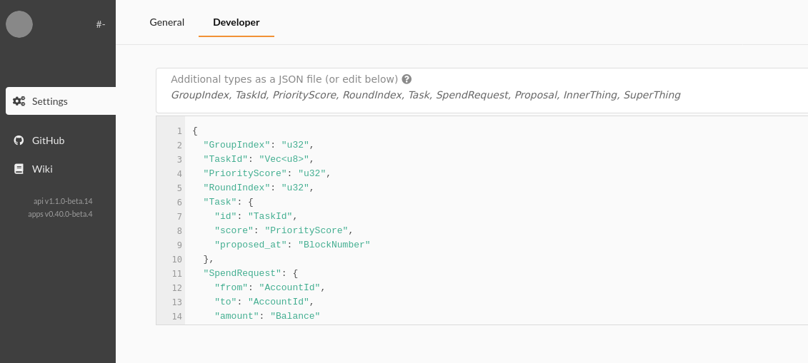

Substrate Recipes 🍴😋🍴
A Hands-On Cookbook for Aspiring Blockchain Chefs
Substrate Recipes is a cookbook of working examples that demonstrate best practices when building blockchains with Substrate. Each recipe contains a complete working code example as well as a detailed writeup describing the code. This book is open source. Check out the contributing guidelines for an overview of the structure and directions for getting involved.
How to Use This Book
The easiest place to read this book is at https://substrate.dev/recipes.
The first two chapters are meant to be read in order.
In Chapter 1, Preparing your Kitchen, you will set up your toolchain, compile a blockchain node, and learn to interact with the blockchain.
In Chapter 2, Appetizers, you will cook your first few recipes, learning the fundamentals of Substrate development.
The rest of the book, the "Entrees", can be read in any order, and you should skip to whichever recipes interest you.
Remember, you can't learn to cook by reading alone. As you work through the book, put on your apron, get out some pots and pans, and practice compiling, testing, and hacking on the recipes. Play with the code in the kitchen, extract patterns, and apply them to a problem that you want to solve!
Getting Help
When learning any new skill, you will inevitably get stuck at some point. When you do get stuck you can seek help in several ways:
- Ask a question on Stack Overflow
- Ask a question in the Substrate Technical Riot channel
- Open a new issue against this repository
What is Substrate?
Substrate is a framework for building blockchains. For a high level overview, read the following blog posts:
To learn more about Substrate, see the official documentation.
Learning Rust
Becoming productive with Substrate requires some familiarity with Rust. Fortunately, the Rust community is known for comprehensive documentation and tutorials. The most common resource for initially learning Rust is The Rust Book. To see examples of popular crate usage patterns, Rust by Example is also convenient.
While knowing some Rust is certainly necessary, it is not wise to delay learning Substrate until you are a Rust guru. Rather than learning Rust before you learn Substrate, consider learning Rust as you learn Substrate. If you're beyond the fundamentals of Rust, there are lots more Rust resources at the end of the book.
Setting Up Your Kitchen
Any experienced chef will tell you that cooking delicious blockchains... I mean meals... starts with a properly equipped and organized kitchen. In this chapter we will guide you through setting up your development environment, and introduce you to the structure of the recipes repository.
This section covers:
- Building a Node - Compile and execute your first Substrate-based blockchain node.
- Interacting with the Node - Submit transactions and inspect state with a user interface.
- Understanding the Kitchen's Organization - How is the code organized, and why?
Building a Node
Prerequisites
Before we can even begin compiling our first blockchain node, we need to have a properly configured Rust toolchain. There is a convenient script that will set up this toolchain for us, and we can run it with the following command.
# Setup Rust and Substrate
curl https://getsubstrate.io -sSf | bash -s -- --fast
This command downloads and executes code from the internet. Give yourself peace-of-mind by inspecting the script's source to confirm it isn't doing anything nasty.
For Windows
These instructions and the rest of the instructions in this chapter assume a unix-like environment such as Linux, MacOS, or Windows Subsystem for Linux (WSL). If you are a Windows user, WSL is the best way to proceed. If you want or need to work in a native Windows environment, this is possible, but is not covered in detail here. Please follow along with the Getting Started on Windows guide, then return here when you're ready to proceed.
Compile the Kitchen Node
If you haven't already, git clone the recipes repository. We also want to kick-start the node compilation as it may take about 30 minutes to complete depending on your hardware.
# Clone the Recipes Repository
git clone https://github.com/substrate-developer-hub/recipes.git
cd recipes
# Update Rust-Wasm toolchain
./nodes/scripts/init.sh
# Compile the Kitchen Node
# This step takes a while to complete
cargo build --release -p kitchen-node
As you work through the recipes, refer back to these instructions each time you wish to re-compile the node. Over time the commands will become familiar, and you will even modify them to compile other nodes.
Checking Your Work
Once the compilation is completed, you can ensure that the node has built properly by displaying its help page. Notice that the node has built to the target/release directory. This is the default location for Rust projects.
# Inside `recipes` directory
# Display the Kitchen Node's help page
./target/release/kitchen-node --help
Interact with the Kitchen Node
If you followed the instructions to build the node, you my proceed to launch your first blockchain.
Launch a Development Node
Before we launch our node we will purge any chain data. If you've followed the instructions exactly, you will not yet have any chain data to purge, but on each subsequent run, you will, and it is best to get in the habbit of purging your chain now. We will start our node in development mode (--dev).
# Purge existing blockchain data (if any)
./target/release/kitchen-node purge-chain --dev
# Start a fresh development blockchain
./target/release/kitchen-node --dev
You should now see blocks created on the console.
Launch the Apps User Interface
You can navigate to the Polkadot-JS Apps user interface. This is a general purpose interface for interacting with many different Substrate-based blockchains including Polkadot. From now on we'll call it "Apps" for short. Before Apps will work with our blockchain, we need to give it a little chain-specific information known as the "types". You'll learn what all this means as you work through the recipes; for now just follow the instructions.
If you are not clicking the link above but visiting Apps directly, by default Apps connects to Polkadot Kusama network. You will need to switch the connecting network to your locally running network, with only one node, by clicking on the network icon on Apps top left corner.

Some browsers, notably Firefox, will not connect to a local node from an https website. An easy work around is to try another browser, like Chromium. Another option is to host this interface locally.
If you're not already on the Settings -> Developerpage, please navigate there. Copy the contents of runtimes/super-runtime/types.json into Apps.

As you work through the recipes, you will use the Chain State tab to query the blockchain status and Extrinsics to send transactions to the blockchain. Play around for a bit before moving on.
Kitchen Organization
Now that your kitchen is well-equipped with all the right tools (bowls, knives, Rust compiler, etc), let's take a look at how it is organized.
Structure of a Substrate Node
It is useful to recognize that coding is all about abstraction.
To understand how the code in this repository is organized, let's first take a look at how a Substrate node is constructed. Each node has many components that manage things like queueing transaction, communicating over a P2P network, reaching consensus on the state of the blockchain, and the chain's actual runtime logic. Each aspect of the node is interesting in its own right, and the runtime is particularly interesting because it contains the business logic (aka "state transition function") that codifies the chain's functionality.
Much, but not all, of the Recipes focuses on writing runtimes with FRAME, Parity's Framework for composing runtimes from individual building blocks called Pallets. Runtimes built with FRAME typically contain several such pallets. The kitchen node you built previously follows this paradigm.
- Blockchain Node
- P2P Messaging
- Consensus
- Runtime
- Pallet 1
- Pallet 2
- Pallet 3
- Transaction Queue
- RPC
The Directories in our Kitchen
There are four primary directories in this repository:
- Text: Source of the book written in markdown. This is what you're reading right now.
- Nodes: Complete Substrate nodes ready to run.
- Runtimes: Complete runtimes for use in Substrate nodes.
- Pallets: Complete pallets for use in FRAME-based runtimes.
Exploring those directories reveals a tree that looks like this
recipes
|
+-- text
|
+-- nodes
|
+-- kitchen-node <-- You built this previously
|
+-- rpc-node
|
+-- runtimes
|
+-- super-runtime <-- You built this too (it is part of the kitchen-node)
|
+-- super-genesis <-- You built this too (it is part of the kitchen-node)
|
+-- weight-fee-runtime
|
+-- weight-fee-genesis
|
+ ...
|
+-- pallets
|
+-- adding-machine <-- You built this too (it is part of super-runtime)
|
+-- basic-token <-- You built this too (it is part of super-runtime)
|
+ ...
|
+-- weights
Inside the Kitchen Node
Let us take a deeper look at the Kitchen Node.
nodes/kitchen-node/Cargo.toml
# -- snip --
runtime = { package = "super-runtime", path = "../../runtimes/super-runtime" }
runtime-genesis = { package = "super-genesis", path = "../../runtimes/super-genesis" }
# runtime = { package = "weight-fee-runtime", path = "../runtimes/weight-fee-runtime"}
# runtime-genesis = { package = "weight-fee-genesis", path = "../runtimes/weight-fee-genesis"}
Looking inside the Kitchen Node's Cargo.toml file we see that it has many dependencies. Most of them come from Substrate itself. Indeed most parts of this Kitchen Node are not unique or specialized, and Substrate offers robust implementations that we can use. The lines quoted above show that the runtime does not come from Substrate. Rather, we use our super-runtime which is in the runtimes folder.
The commented lines, also quoted above, show that the Super Runtime is not the only runtime we could have chosen. We could also use the Weight-Fee runtime, and I encourage you to try that experiment (remember, instructions to re-compile the node are in the previous section).
Every node must have a runtime. You may confirm that by looking at the Cago.toml files of the other nodes included in our kitchen.
Inside the Super Runtime
Having seen that the Kitchen Node depends on a runtime, let us now look deeper at the Super Runtime.
runtimes/super-runtime/Cargo.toml
# -- snip --
# Substrate Pallets
balances = { package = 'pallet-balances', git = 'https://github.com/paritytech/substrate.git', ... }
transaction-payment = { package = 'pallet-transaction-payment', git = 'https://github.com/paritytech/substrate.git',... }
# Recipe Pallets
adding-machine = { path = "../../pallets/adding-machine", default-features = false }
basic-token = { path = "../../pallets/basic-token", default-features = false }
Here we see that the runtime depends on many pallets. Some of these pallets come from Substrate itself. Indeed, Substrate offers a rich collection of commonly used pallets which you may use in your own runtimes. This runtime also contains several custom pallets that are written right here in our Kitchen.
Common Patterns
We will not yet look closely at individual Pallets. We will begin that endeavor in the next chapter -- Appetizers.
We've just observed the general pattern used throughout the recipes. From the inside out, we see a piece of pallet code stored in pallets/<pallet-name>/src/lib.rs. The pallet is then included into a runtime by adding its name and relative path in runtimes/<runtime-name>/Cargo.toml. that runtime is then installed in a node by adding its name and relative path in nodes/<node-name>/Cargo.toml. Of course adding pallets and runtimes also requires changing actual code as well. We will cover those details in due course. For now we're just focusing on macroscopic relationships between the parts of a Substrate node.
Some recipes explore aspects of Blockchain development that are outside of the runtime. Looking back to our node architecture at the beginning of this section, you can imagine that changing a node's RPC or Consensus would be conceptually similar to changing its runtime.
Additional Resources
Substrate Developer Hub offers tutorials that go into more depth about writing pallets and including them in runtimes. If you desire, you may read them as well.
Let's Get Cooking!
When you're ready, we can begin by cooking some appetizer pallets.
Appetizers
This section of the cookbook will focus on Appetizers, small runtime pallets that teach you the basics of writing pallets with a little hand-holding. If you are brand new to Substrate, you should follow through these appetizers in order. If you've already got the basics of pallet development down, you may skip ahead to the entrees which may be read in any order.
This section covers:
- Dispatchable Calls - How users submit transactions
- Storage Values - Storing the state of the blockchain
- Errors - When things go wrong during a transaction
- Events - Notifying the offchain world of success
Hello Substrate
The first pallet we'll explore is a simple "hello world" example. This pallet will have one dispatchable call that prints a message to the node's output. Because this is our first pallet, we'll also explore the structure that every pallet has. This code lives in pallets/hello-substrate/src/lib.rs.
No Std
The very first line of code tells the rust compiler that this crate should not use rust's standard library except when explicitly told to. This is useful because Substrate runtimes compile to Web Assembly where the standard library is not available.
#![cfg_attr(not(feature = "std"), no_std)]
Imports
Next, you'll find imports that come from various parts of the Substrate framework. All pallets will import from a few common crates including frame-support, and frame-system. Complex pallets will have many imports as we'll see later. The hello-substrate pallet uses these imports.
use frame_support::{ decl_module, dispatch::DispatchResult };
use frame_system::{ self as system, ensure_signed };
use sp_runtime::print;
Tests
Next we see a reference to the tests module. This pallet has tests written in a separate file called tests.rs. We will not discuss the tests further at this point, but they are covered in the Testing section of the book.
Configuration Trait
Next, each pallet has a configuration trait which is called Trait. The configuration trait can be used to access features from other pallets, or constants that effect the pallet's behavior. This pallet is simple enough that our configuration trait can remain empty, although it must still exist.
pub trait Trait: system::Trait {}
Dispatchable Calls
A Dispatchable call is a function that a blockchain user can call as part of an Extrinsic. "Extrinsic" is Substrate jargon meaning a call from outside of the chain. Most of the time they are transactions, and for now it is fine to think of them as transactions. Dispatchable calls are defined in the decl_module! macro.
decl_module! {
pub struct Module<T: Trait> for enum Call where origin: T::Origin {
pub fn say_hello(origin) -> DispatchResult {
// --snip--
}
// More dispatchable calls could go here
}
}
As you can see, our hello-substrate pallet has one dipatchable call that takes a single argument, called origin which we'll investigate shortly. Both calls return a DispatchResult which can be either Ok(()) indicating that the call succeeded, or and Err which we'll investigate in the appetizer about errors.
Inside a Dispatchable Call
Let's take a closer look at our dispatchable call.
pub fn say_hello(origin) -> DispatchResult {
// Ensure that the caller is a regular keypair account
let caller = ensure_signed(origin)?;
// Print a message
print("Hello World");
// Inspecting variables
debug::info!("Request sent by: {:?}", caller);
// Indicate that this call succeeded
Ok(())
}
This function essentially does three things. First, it uses the ensure_signed function to ensure that the caller of the function was a regular user who owns a private key. This macro also returns who that caller was. We store the caller's identity in the caller variable.
Second, it prints a message and logs the caller. Notice that we aren't using Rust's normal println! macro, but rather a special print function and debug::info! macro. The reason for this is explained in the next section.
Finally, the call returns Ok(()) to indicate that the call has succeeded. At a glance it seems that there is no way for this call to fail, but this is not quite true. The ensure_signed function, used at the beginning, can return an error if the call was not from a signed origin. This is the first time we're seeing the important paradigm "Verify first, write last". In Substrate development, it is important that you always ensure preconditions are met and return errors at the beginning. After these checks have completed, then you may begin the functions computation.
Printing from the Runtime
Printing to the terminal from a rust program is typically very simple using the println! macro. However, Substrate runtimes are compiled to Web Assembly as well as a regular native binary, and do not have access to rust's standard library. That means we cannot use the regular println!. I encourage you to modify the code to try using println! and confirm that it will not compile. Nonetheless, printing a message from the runtime is useful both for logging information, and also for debugging.

At the top of our pallet, we imported sp_runtime's print function. This special function allows the runtime to pass a message for printing to the outer part of the node which is not built to Wasm. This function is only able to print items that implement the Printable trait. Luckily all the primitive types already implement this trait, and you can implement the trait for your own datatypes too.
Print function note: We also need to include the flag -lruntime=debug when running the kitchen node.
The next line demonstrates using debug::info! macro to log to the screen and also inspecting the variable's content. The syntax inside the macro is very similar to what regular rust macro println! takes.
Runtime logger note: When we execute the runtime in native, debug::info! messages are printed. However, if we execute the runtime in Wasm, then an additional step to initialise RuntimeLogger is required.
Installing the Pallet in a Runtime
In order to actually use a pallet, it must be installed in a Substrate runtime. This particular pallet is installed in the super-runtime which you built as part of the kitchen node. To install a pallet in a runtime, you must do three things.
Depend on the Pallet
First we must include the pallet in our runtime's Cargo.toml file. In the case of the super-runtime, this file is at runtimes/super-runtime/Cargo.toml.
[dependencies]
# --snip--
hello-substrate = { path = "../../pallets/hello-substrate", default-features = false }
Because the runtime is built to both native and Wasm, we must ensure that our pallet is built to the correct target as well. At the bottom of the Cargo.toml file, we see this.
[features]
default = ["std"]
std = [
# --snip--
"hello-substrate/std",
]
Implement its Configuration Trait
Next we must implement the pallet's configuration trait. This happens in the runtime's main lib.rs file. In the case of the super-runtime, this file is at runtimes/super-runtime/src/lib.rs. Because this pallet's configuration trait is trivial, so is implementing it.
impl hello_substrate::Trait for Runtime {}
You can see the corresponding trait implementations in the surrounding lines. Most of them are more complex.
Add it to construct_runtime!
Finally, we add our pallet to the construct_runtime! macro.
construct_runtime!(
pub enum Runtime where
Block = Block,
NodeBlock = opaque::Block,
UncheckedExtrinsic = UncheckedExtrinsic
{
// --snip--
HelloSubstrate: hello_substrate::{Module, Call},
}
);
This macro does the heavy lifting of composing each individual pallet into a single usable runtime. Let's explain the syntax for each line. Each Pallet listed in the macro needs several pieces of information.
First is a convenient name to give to this pallet. We've chosen HelloSubstrate. It is common to choose the same name as the pallet itself except when there is more than one instance. Next is the name of the crate that the pallet lives in. And finally there is a list of features the pallet provides. All pallet require Module. Our pallet also provides dispatchable calls, so it requires Call.
Try it Out
If you haven't already, try interacting with the pallet using the Apps UI. You should see your message printed to the log of your node. Remember to run the kitchen node with the correct flags: ./kitchen-node --dev -lruntime=debug
You're now well on your way to becoming a blockchain chef. Let's continue to build our skills with another appetizer.
Single Value
Storage is used for data that should be kept between blocks, and accessible to future transactions. Most runtimes will have many storage values, and together the storage values make up the blockchain's "state". The storage values themselves are not stored in the blocks. Instead the blocks contains extrinsics which represent changes to the storage values. It is the job of each node in a blockchain network to keep track of the current storage. The current state of storage can be determined by executing all of the blocks in the chain.
Declaring Storage
A pallet's storage items are declared with the decl_storage! macro.
decl_storage! {
trait Store for Module<T: Trait> as SingleValue {
// --snip--
}
}
The code above is boilerplate that does not change with the exception of the SingleValue. The macro uses this as the name for a struct that it creates. As a pallet author you don't need to worry about this value much, and it is fine to use the name of the pallet itself.
This pallet has two storage items, both of which are single storage values. Substrate's storage API also supports more complex storage types which are covered in the entrees. The fundamentals for all types are the same.
Our first storage item is a u32 value which is declared with this syntax
StoredValue get(fn stored_value): u32;
The StorageValue is the name of the storage item, similar to a variable name. We will use this name any time we write to the storage item. The get(fn stored_value) is optional. It tells the decl_storage! macro to create a getter function for us. That means we get a function called stored_value which returns the value in that storage item. Finally, the : u32 declares the type of the item.
The next storage item is an AccountId. This is not a primitive type, but rather comes from the system pallet. Types like this need to be prefixed with a T:: as we see here.
StoredAccount get(fn stored_account): T::AccountId;
Reading and Writing to Storage
Functions used to access a single storage value are defined in the StorageValue trait. In this pallet, we use the most common method, put, but it is worth skimming the other methods so you know what is available.
The set_value method demonstrates writing to storage, as well as taking a parameter in our dispatchable call.
fn set_value(origin, value: u32) -> DispatchResult {
let _ = ensure_signed(origin)?;
StoredValue::put(value);
Ok(())
}
To read a value from storage, we could use the get method, or we could use the getter method we declared in decl_storage!.
// The following lines are equivalent
let my_val = StoredValue::get();
let my_val = Self::stored_value();
Storing the Callers Account
In terms of storage, the set_account method is quite similar to set_value, but it also demonstrates how to retreive the AccountId of the caller using the ensure_signed function.
fn set_account(origin) -> DispatchResult {
let who = ensure_signed(origin)?;
<StoredAccount<T>>::put(&who);
Ok(())
}
Because AccountId type comes from the configuration trait, we must use slightly different syntax. Notice the <T> attached to the name of the storage value this time. Notice also that because AccountId is not primitive, we lend a reference to it rather than transferring ownership.
Constructing the Runtime
We learned about the construct_runtime! macro in the previous section. Because this pallet uses storage items, we must add this to the line in construct runtime. In the Super Runtime, we see the additional Storage feature.
construct_runtime!(
pub enum Runtime where
Block = Block,
NodeBlock = opaque::Block,
UncheckedExtrinsic = UncheckedExtrinsic
{
// --snip--
SingleValue: single_value::{Module, Call, Storage},
}
);
Handling Errors
As we've mentioned before, in Substrate development, it is important to Verify first, write last. In this recipe, we'll create an adding machine checks for unlucky numbers (a silly example) as well as integer overflow (a serious and realistic example), and throws the appropriate errors.
Declaring Errors
Errors are declared with the decl_error! macro. Although it is optional, it is good practice to write doc comments for each error variant as demonstrated here.
decl_error! {
pub enum Error for Module<T: Trait> {
/// Thirteen is unlucky and prohibitted
UnluckyThirteen,
/// Sum would have overflowed if we had added
SumTooLarge,
}
}
Throwing Errors in match Statement
Errors can be thrown in two different ways, both of which are demonstrated in the the add dispatchable call. The first is with the ensure! macro where the error to throw is the second parameter. The second is to throw the error by explicitly returning it.
fn add(origin, val_to_add: u32) -> DispatchResult {
let _ = ensure_signed(origin)?;
// First check for unlucky number 13
ensure!(val_to_add != 13, <Error<T>>::UnluckyThirteen);
// Now check for overflow while adding
let result = match Self::sum().checked_add(val_to_add) {
Some(r) => r,
None => return Err(<Error<T>>::SumTooLarge.into()),
};
// Write the new sum to storage
Sum::put(result);
Ok(())
}
Notice that the Error type always takes the generic parameter T. Notice also that we have verified all preconditions, and thrown all possible errors before ever writing to storage.
Throwing Errors with .ok_or and .map_err
In fact, the pattern of:
- calling functions that returned a
ResultorOption, and - checking if the result is
SomeorOk. If not, returns from the function early with an error
are so common that there are two standard Rust methods help performing the task.
fn add_alternate(origin, val_to_add: u32) -> DispatchResult {
let _ = ensure_signed(origin)?;
ensure!(val_to_add != 13, <Error<T>>::UnluckyThirteen);
// Using `ok_or()` to check if the returned value is `Ok` and unwrap the value.
// If not, returns error from the function.
let result = Self::sum().checked_add(val_to_add).ok_or(<Error<T>>::SumTooLarge)?;
Sum::put(result);
Ok(())
}
Notice the pattern of .ok_or(<Error<T>>::MyError)?;. This is really handy when you have a function call that returns an Option and you expect there should be a value inside. If not, returns early with an error message, all the while unwrapping the value for your further processing.
If your function returns a Result<T, E>, you could apply .map_err(|_e| <Error<T>>::MyError)?; in the same spirit.
Constructing the Runtime
Unlike before, adding errors to our pallet does not require a change to the line in construct_runtime!. This is just an idiosyncrasy of developing in Substrate.
Using Events
pallets/simple-event, pallets/generic-event
Having a transaction included in a block does not guarantee that the function executed successfully. As we saw in the previous recipe, many calls can cause errors, but still be included in a block. To verify that functions have executed successfully, emit an event at the bottom of the function body.
Events notify the off-chain world of successful state transitions.
Some Prerequisites
When using events, we have to include the Event type in our configuration trait. Although the syntax is a bit complex, it is the same every time. If you are a skilled Rust programmer you will recognize this as a series of trait bounds. If you don't recognize this feature of Rust yet, don't worry; it is the same every time, so you can just copy it and move on.
pub trait Trait: system::Trait {
type Event: From<Event> + Into<<Self as system::Trait>::Event>;
}
Next we have to add a line inside of the decl_module! macro which generates the deposit_event function we'll use later when emitting our events. Even experienced Rust programmers will not recognize this syntax because it is unique to this macro. Just copy it each time.
decl_module! {
pub struct Module<T: Trait> for enum Call where origin: T::Origin {
// This line is new
fn deposit_event() = default;
// --snip--
}
}
Declaring Events
To declare an event, use the decl_event! macro. Like any rust enum, Events have names, and can optionally carry data with them. The syntax is slightly different depending on whether the events carry data of primitive types, or generic types from the pallet's configuration trait. These two techniques are demonstrated in the simple-event and generic-event pallets respectively.
Simple Events
The simplest example of an event uses the following syntax
decl_event!(
pub enum Event {
EmitInput(u32),
}
);
Events with Generic Types
Sometimes events might contain types from the pallet's Configuration Trait. In this case, it is necessary to specify additional syntax
decl_event!(
pub enum Event<T> where AccountId = <T as system::Trait>::AccountId {
EmitInput(AccountId, u32),
}
);
This example also demonstrates how the where clause can be used to specify type aliasing for more readable code.
Emitting Events
Events are emitted from dispatchable calls using the deposit_event method.
Simple Events
The event is emitted at the bottom of the do_something function body.
Self::deposit_event(Event::EmitInput(new_number));
Events with Generic Types
The syntax for deposit_event now takes the RawEvent type because it is generic over the pallet's configuration trait.
Self::deposit_event(RawEvent::EmitInput(user, new_number));
Constructing the Runtime
For the first time in the recipes, our pallet has an associated type in its configuration trait. We must specify this type when implementing its trait. In the case of the Event type, this is entirely straight forward, and looks the same for both simple events and generic events.
impl simple_event::Trait for Runtime {
type Event = Event;
}
Events, like dispatchable calls and storage items, requires a slight change to the line in construct_runtime!. Notice that the <T> is necessary for generic events.
construct_runtime!(
pub enum Runtime where
Block = Block,
NodeBlock = opaque::Block,
UncheckedExtrinsic = UncheckedExtrinsic
{
// --snip--
GenericEvent: generic_event::{Module, Call, Event<T>},
SimpleEvent: simple_event::{Module, Call, Event},
}
);
Entrees
These Entrees are for chefs who have the basics down. If you've read through the first two chapters of this cookbook, that includes you! The entrees cover a wide variety of topics in Substrate development, and are meant to be read in any order.
Storage API
We've already encountered the decl_storage! macro in the appetizer on storage items. There is a rich storage API in Substrate which we will explore in this section.
For cryptocurrencies, storage might consist of a mapping between account keys and corresponding balances.
More generally, blockchains provide an interface to store and interact with data in a verifiable and globally irreversible way. In this context, data is stored in a series of snapshots, each of which may be accessed at a later point in time, but, once created, snapshots are considered irreversible.
Arbitrary data may be stored, as long as its data type is serializable in Substrate i.e. implements Encode and Decode traits.
The previous single-value storage recipe showed how a single value can be stored in runtime storage. In this section, we cover
- caching values rather than calling to storage multiple times
- storing sets, checking membership, and iteration
- ordered lists with basic maps and linked maps
- efficient subgroup removal by key prefix with double maps
- storing custom structs
in-progress
Cache Multiple Calls
Calls to runtime storage have an associated cost. With this in mind, multiple calls to storage values should be avoided when possible.
decl_storage! {
trait Store for Module<T: Trait> as StorageCache {
// copy type
SomeCopyValue get(fn some_copy_value): u32;
// clone type
KingMember get(fn king_member): T::AccountId;
GroupMembers get(fn group_members): Vec<T::AccountId>;
}
}
For Copy types, it is easy to reuse previous storage calls by simply reusing the value (which is automatically cloned upon reuse). With this in mind, the second call in the following code is unnecessary:
fn swap_value_no_cache(origin, some_val: u32) -> Result {
let _ = ensure_signed(origin)?;
let original_call = <SomeCopyValue>::get();
let some_calculation = original_call + some_val;
// this next storage call is unnecessary and is wasteful
let unnecessary_call = <SomeCopyValue>::get();
// should've just used first_call here because u32 is copy
let another_calculation = some_calculation + unnecessary_call;
<SomeCopyValue>::put(another_calculation);
let now = <system::Module<T>>::block_number();
Self::deposit_event(RawEvent::InefficientValueChange(another_calculation, now));
Ok(())
}
Instead, the initial call value should be reused. In this example, the SomeCopyValue value is Copy so we should prefer the following code without the unnecessary second call to storage:
fn swap_value_w_copy(origin, some_val: u32) -> Result {
let _ = ensure_signed(origin)?;
let original_call = <SomeCopyValue>::get();
let some_calculation = original_call + some_val;
// uses the original_call because u32 is copy
let another_calculation = some_calculation + original_call;
<SomeCopyValue>::put(another_calculation);
let now = <system::Module<T>>::block_number();
Self::deposit_event(RawEvent::InefficientValueChange(another_calculation, now));
Ok(())
}
If the type was not Copy, but was Clone, then it is still preferred to clone the value in the method than to make another call to runtime storage.
decl_storage! {
trait Store for Module<T: Trait> as StorageCache {
// ...<copy type here>...
// clone type
KingMember get(fn king_member): T::AccountId;
GroupMembers get(fn group_members): Vec<T::AccountId>;
}
}
The runtime methods enable the calling account to swap the T::AccountId value in storage if
- the existing storage value is not in
GroupMembersAND - the calling account is in `Group Members
The first implementation makes a second unnecessary call to runtime storage instead of cloning the call for existing_key:
fn swap_king_no_cache(origin) -> Result {
let new_king = ensure_signed(origin)?;
let existing_king = <KingMember<T>>::get();
// only places a new account if
// (1) the existing account is not a member &&
// (2) the new account is a member
ensure!(!Self::is_member(existing_king), "is a member so maintains priority");
ensure!(Self::is_member(new_king.clone()), "not a member so doesn't get priority");
// BAD (unnecessary) storage call
let old_king = <KingMember<T>>::get();
// place new king
<KingMember<T>>::put(new_king.clone());
Self::deposit_event(RawEvent::InefficientKingSwap(old_king, new_king));
Ok(())
}
If the existing_key is used without a clone in the event emission instead of old_king, then the compiler returns the following error
error[E0382]: use of moved value: `existing_king`
--> src/lib.rs:93:63
|
80 | let existing_king = <KingMember<T>>::get();
| ------------- move occurs because `existing_king` has type `<T as frame_system::Trait>::AccountId`, which does not implement the `Copy` trait
...
85 | ensure!(!Self::is_member(existing_king), "is a member so maintains priority");
| ------------- value moved here
...
93 | Self::deposit_event(RawEvent::InefficientKingSwap(existing_king, new_king));
| ^^^^^^^^^^^^^ value used here after move
error: aborting due to previous error
For more information about this error, try `rustc --explain E0382`.
error: Could not compile `storage-cache`.
To learn more, run the command again with --verbose.
Fixing this only requires cloning the original call to storage before it is moved:
fn swap_king_with_cache(origin) -> Result {
let new_king = ensure_signed(origin)?;
let existing_king = <KingMember<T>>::get();
// clone before existing_king is moved
let old_king = existing_king.clone();
// existing king is moved next
ensure!(!Self::is_member(existing_king), "is a member so maintains priority");
ensure!(Self::is_member(new_king.clone()), "not a member so doesn't get priority");
// <no (unnecessary) storage call here>
// place new king
<KingMember<T>>::put(new_king.clone());
// use cached old_king value here
Self::deposit_event(RawEvent::BetterKingSwap(old_king, new_king));
Ok(())
}
Not all types implement Copy or Clone, so it is important to discern other patterns that minimize and alleviate the cost of calls to storage.
Set Storage and Iteration
Storing a vector in the runtime can often be useful for managing groups and verifying membership. This recipe discusses common patterns encounted when storing vectors in runtime storage.
Verifying Group Membership
To maintain a set of AccountId to establish group ownership of decisions, it is straightforward to store a vector in the runtime of AccountId.
decl_storage! {
trait Store for Module<T: Trait> as VecMap {
Members get(fn members): Vec<T::AccountId>;
}
}
It is easy to add the following helper method to verify membership elsewhere in the runtime.
impl<T: Trait> Module<T> {
fn is_member(who: &T::AccountId) -> bool {
<Members<T>>::get().contains(who)
}
}
This helper method can be placed in other runtime methods to restrict certain changes to runtime storage to privileged groups. Depending on the incentive structure of the network/chain, the members in these groups may have earned membership and the subsequent access rights through loyal contributions to the system.
// use support::ensure
fn member_action(origin) -> Result {
let member = ensure_signed(origin)?;
ensure!(Self::is_member(&member), "not a member => cannot do action");
// <action && || storage change>
Ok(())
}
In this example, the helper method facilitates isolation of runtime storage access rights according to membership. In general, place ensure! checks at the top of each runtime function's logic to verify that all of the requisite checks pass before performing any storage changes.
NOTE: child trie storage provides a more efficient data structure for tracking group membership
Append vs. Mutate
decl_storage! {
trait Store for Module<T: Trait> as VecMap {
CurrentValues get(fn current_values): Vec<u32>;
NewValues get(fn new_values): Vec<u32>;
}
}
Before 3071 was merged, it was necessary to call mutate to push new values to a vector stored in runtime storage.
fn mutate_to_append(origin) -> Result {
let user = ensure_signed(origin)?;
// this decodes the existing vec, appends the new values, and re-encodes the whole thing
<CurrentValues>::mutate(|v| v.extend_from_slice(&Self::new_values()));
Self::deposit_event(RawEvent::MutateToAppend(user));
Ok(())
}
For vectors stored in the runtime, mutation can be relatively expensive. This follows from the fact that mutate entails decoding the vector, making changes, and re-encoding the whole vector. It seems wasteful to decode the entire vector, push a new item, and then re-encode the whole thing. This provides sufficient motivation for append:
fn append_new_entries(origin) -> Result {
let user = ensure_signed(origin)?;
// this encodes the new values and appends them to the already encoded existing evc
let mut current_values = Self::current_values();
current_values.append(&mut Self::new_values());
Self::deposit_event(RawEvent::AppendVec(user));
Ok(())
}
append encodes the new values, and pushes them to the already encoded vector without decoding the existing entries. This method removes the unnecessary steps for decoding and re-encoding the unchanged elements.
Iteration in the Runtime
In general, iteration in the runtime should be avoided. In the future, offchain-workers may provide a less expensive way to iterate over runtime storage items. Moreover, child tries enable cheap inclusion proofs without the same lookup costs associated with vectors.
Even so, there are a few tricks to alleviate the costs of iterating over runtime storage items like vectors. For example, it is cheaper to iterate over a slice than a vector. With this in mind, store items in the runtime as vectors and transform them into slices after making storage calls. 3041 introduced insert_ref and put_ref in order to allow equivalent reference-style types to be placed without copy (e.g. a storage item of Vec<AccountId> can now be written from a &[AccountId]). This enables greater flexibility when working with slices that are associated with vectors stored in the runtime.
Lists: Maps vs Linked Maps
Substrate does not natively support a list type since it may encourage dangerous habits. Unless explicitly guarded against, a list will add unbounded O(n) complexity to an operation that will only charge O(1) fees (Big O notation refresher). This opens an economic attack vector on your chain.
Emulate a list with a mapping and a counter like so:
use support::{StorageValue, StorageMap};
decl_storage! {
trait Store for Module<T: Trait> as Example {
TheList get(fn the_list): map u32 => T::AccountId;
TheCounter get(fn the_counter): u32;
}
}
This code allows us to store a list of participants in the runtime represented by AccountIds. Of course, this implementation leaves many unanswered questions such as
- How to add and remove elements?
- How to maintain order under mutating operations?
- How to verify that an element exists before removing/mutating it?
This recipe answers those questions with snippets from relevant code samples:
- Adding/Removing Elements in an Unordered List
- Swap and Pop for Ordered Lists
- Linked Map for Simplified Enumeration
Note: It is important to properly handle overflow/underflow and verify other relevant conditions for safety.
Adding/Removing Elements in an Unbounded List
If the size of the list is not relevant, the implementation is straightforward. To add an AccountId, increment the the_counter and insert an AccountId at that index:
fn add_member(origin) -> Result {
let who = ensure_signed(origin)?;
let new_count = <TheCounter<T>>::get() + 1;
// insert new member at next highest index
<TheList<T>>::insert(new_count, who.clone());
// increment counter
<TheCounter<T>>::put(new_count);
Self::deposit_event(RawEvent::MemberAdded(who));
Ok(())
}
To remove an AccountId, call the remove method for the StorageMap type at the relevant index. In this case, it isn't necessary to update the indices of other proposals; order is not relevant.
fn remove_member_unbounded(origin, index: u32) -> Result {
let who = ensure_signed(origin)?;
// verify existence
ensure!(<TheList<T>>::exists(index), "an element doesn't exist at this index");
// for event emission
let removed_member = <TheList<T>>::get(index);
// remove member at provided index
<TheList<T>>::remove(index);
Self::deposit_event(RawEvent::MemberRemoved(removed_member));
Ok(())
}
Because the code doesn't update the indices of other AccountIds in the map, it is necessary to verify an AccountId's existence before removing it, mutating it, or performing any other operation.
Swap and Pop for Ordered Lists
To preserve storage so that the list doesn't continue growing even after removing elements, invoke the swap and pop algorithm:
- swap the element to be removed with the element at the head of the list (the element with the highest index in the map)
- remove the element recently placed at the highest index
- decrement the
TheCountvalue.
Use the swap and pop algorithm to remove elements from the list.
fn remove_member_bounded(origin, index: u32) -> Result {
let _ = ensure_signed(origin)?;
ensure!(<TheList<T>>::exists(index), "an element doesn't exist at this index");
let largest_index = <TheCounter>::get();
let member_to_remove = <TheList<T>>::take(index);
// swap
if index != largest_index {
let temp = <TheList<T>>::take(largest_index);
<TheList<T>>::insert(index, temp);
<TheList<T>>::insert(largest_index, member_to_remove.clone());
}
// pop
<TheList<T>>::remove(largest_index);
<TheCounter>::mutate(|count| *count - 1);
Self::deposit_event(RawEvent::MemberRemoved(member_to_remove.clone()));
Ok(())
}
Linked Map
To trade performance for relatively simple code, use the linked_map data structure. By implementing StorageLinkedMap in addition to StorageMap, linked_map provides a method head which yields the head of the list, thereby making it unnecessary to also store the LargestIndex (the counters). The enumerate method also returns an Iterator ordered according to when (key, value) pairs were inserted into the map.
To use linked_map, import EnumerableStorageMap. Here is the new declaration in the decl_storage block:
use support::{StorageMap, EnumerableStorageMap}; // no StorageValue necessary
decl_storage! {
trait Store for Module<T: Trait> as Example {
LinkedList get(fn linked_list): linked_map u32 => T::AccountId;
LinkedCounter get(fn linked_counter): u32;
}
}
The method adding members is no different than the previously covered method, but the remove_member_linked method expresses swap and pop in a different way
fn remove_member_linked(origin, index: u32) -> Result {
let _ = ensure_signed(origin)?;
ensure!(<LinkedList<T>>::exists(index), "A member does not exist at this index");
let head_index = <LinkedList<T>>::head().unwrap();
// swap
let member_to_remove = <LinkedList<T>>::take(index);
let head_member = <LinkedList<T>>::take(head_index);
<LinkedList<T>>::insert(index, head_member);
<LinkedList<T>>::insert(head_index, member_to_remove);
// pop
<LinkedList<T>>::remove(head_index);
Ok(())
}
This implementation incurs some performance costs (vs solely using StorageMap and StorageValue) because linked_map heap allocates the entire map as an iterator in order to implement the enumerate method.
Efficent Subgroup Removal by Subkey: Double Maps
For some runtimes, it may be necessary to remove a subset of values in a key-value mapping. If the subset maintain an associated identifier type, this can be done in a clean way with the double_map via the remove_prefix api.
pub type GroupIndex = u32; // this is Encode (which is necessary for double_map)
decl_storage! {
trait Store for Module<T: Trait> as Dmap {
/// Member score (double map)
MemberScore get(fn member_score):
double_map hasher(blake2_256) GroupIndex, hasher(blake2_256) T::AccountId => u32;
/// Get group ID for member
GroupMembership get(fn group_membership): map hasher(blake2_256) T::AccountId => GroupIndex;
/// For fast membership checks, see check-membership recipe for more details
AllMembers get(fn all_members): Vec<T::AccountId>;
}
}
For the purposes of this example, store the scores of each members in a map that associates this u32 value with two keys: (1) the hash of the member's AccountId and (2) a GroupIndex identifier. This allows for efficient removal of all values associated with a specific GroupIndex identifier.
fn remove_group_score(origin, group: GroupIndex) -> Result {
let member = ensure_signed(origin)?;
let group_id = <GroupMembership<T>>::get(member);
// check that the member is in the group (could be improved by requiring n-of-m member support)
ensure!(group_id == group, "member isn't in the group, can't remove it");
// allows us to remove all group members from MemberScore at once
<MemberScore<T>>::remove_prefix(&group_id);
Self::deposit_event(RawEvent::RemoveGroup(group_id));
Ok(())
}
Note: It is necessary for one of the two keys to be hashed; TODO
Child Tries
pallets/child-trie, pallets/simple-crowdfund
A trie is an ordered tree structure for managing dynamic sets. For any given parent node, all descendants (children) share a common prefix associated with the parent.
This construction lends itself to efficient removal of subgroups of a dataset (similar to double_map). By associating a common prefix with related data, the dataset can be partitioned to effectively batch deletions.
Every change in the leaves percolates up to the root, thereby providing a complete, succinct history of all changes to the underlying data structure in the form of the trie root hash.
Runtime Child Storage
To interact with child tries, there are methods exposed in runtime child storage. Of the methods listed in the documentation, it is worth emphasizing the method associated with batch deletion.
/// Remove all `storage_key` key/values
pub fn kill_storage(storage_key: &[u8]) {
runtime_io::kill_child_storage(storage_key)
}
/// Remove value associated with `key` in trie with `storage_key`
pub fn kill(storage_key: &[u8], key: &[u8]) {
runtime_io::clear_child_storage(storage_key, key);
}
kill_storage deletes all (key, value) pairs associated with the storage_key. The basic API for interacting with a given child trie follows this format:
// pseudocode
child::do(trie_id, key, value);
To put an object in a child trie, the code would look something like
fn kv_put(index: ObjectCount, who: &T::AccountId, value_type: &ValueType) {
let mut buf = Vec::new();
buf.extend_from_slice(b"exchildtr");
buf.extend_from_slice(&index.to_le_bytes()[..]);
let id = CHILD_STORAGE_KEY_PREFIX.into_iter()
.chain(b"default:")
.chain(T::Hashing::hash(&buf[..]).as_ref().into_iter())
.cloned()
.collect();
who.using_encoded(|b| child::put(id.as_ref(), b, value_type));
}
The code in pallets/child-trie demonstrates a minimal way of organizing the basic child-trie api methods (as done in polkadot/runtime/crowdfund). It separates out the generation of the child trie id from the index with a runtime method id_from_index.
pub fn id_from_index(index: ObjectCount) -> Vec<u8> {
let mut buf = Vec::new();
buf.extend_from_slice(b"exchildtr");
buf.extend_from_slice(&index.to_le_bytes()[..]);
CHILD_STORAGE_KEY_PREFIX
.into_iter()
.chain(b"default:")
.chain(Blake2Hasher::hash(&buf[..]).as_ref().into_iter())
.cloned()
.collect()
}
This results in less code for each method:
pub fn kv_put(index: ObjectCount, who: &T::AccountId, value_type: ValueType) {
let id = Self::id_from_index(index);
who.using_encoded(|b| child::put(id.as_ref(), b, &value_type));
}
smpl-crowdfund
Child tries are useful for batch deletion of (key, value) pairs associated with a specific trie_id. This is relevant to the polkadot/crowdfund pallet, which tracks (AccountId, BalanceOf<T>) associated with a specific crowdfund. BalanceOf<T> represents the contributions of an AccountId. The identifier for each crowdfund is defined
type FundIndex = u32
With these three types, this storage item effectively manages (FundIndex, AccountId, BalanceOf<T>). By maintaining a separate child for every FundIndex, this api allows for efficient batch deletions when crowdfunds are ended and dissolved.
// polkadot/runtime/crowdfund
pub fn crowdfund_kill(index: FundIndex) {
let id = Self::id_from_index(index);
child::kill_storage(id.as_ref());
}
The child trie api is useful when data associated with an identifier needs to be isolated to facilitate efficient batch removal. In this case, all the information associated with a given crowdfund should be removed when the crowdfund is dissolved.
caveat coder
Each individual call to read/write to the child trie is more expensive than it would be for map or double_map. This cost is poorly amortized over a large number of calls, but can be significantly reduced by following a proper batch execution strategy.
Using and Storing Structs
In Rust, a struct, or structure, is a custom data type that lets you name and package together multiple related values that make up a meaningful group. If you’re familiar with an object-oriented language, a struct is like an object’s data attributes (read more in The Rust Book).
Defining a Struct
To define a simple custom struct for the runtime, the following syntax may be used:
#[derive(Encode, Decode, Default, Clone, PartialEq)]
pub struct MyStruct {
some_number: u32,
optional_number: Option<u32>,
}
In the code snippet above, the derive macro is declared to ensure MyStruct conforms to shared behavior according to the specified traits: Encode, Decode, Default, Clone, PartialEq. If you wish the store this struct in blockchain storage, you will need to derive (or manually ipmlement) each of these traits.
To use the Encode and Decode traits, it is necessary to import them.
use frame_support::codec::{Encode, Decode};
Structs with Generic Fields
The simple struct shown earlier only uses Rust primitive types for its fields. In the common case where you want to store types that come from your pallet's configuration trait (or the configuration trait of another pallet in your runtime), you must use generic type parameters in your struct's definition.
#[derive(Encode, Decode, Clone, Default, RuntimeDebug)]
pub struct InnerThing<Hash, Balance> {
number: u32,
hash: Hash,
balance: Balance,
}
Here you can see that we want to store items of type Hash and Balance in the struct. Because these types come from the system and balances pallets' configuration traits, we must specify them as generics when declaring the struct.
It is often convenient to make a type alias that takes T, your pallet's configuration trait, as a single type parameter. Doing so simply saves you typing in the future.
type InnerThingOf<T> = InnerThing<<T as system::Trait>::Hash, <T as balances::Trait>::Balance>;
Structs in Storage
Using one of our structs as a storage item is not significantly different than using a primitive type. When using a generic struct, we must supply all of the generic type parameters. This snippet shows how to supply thos parameters when you have a type alias (like we do for InnerThing) as well as when you don't. Whether to include the type alias is a matter of style and taste, but it is generally preferred when the entire type exceeds the preferred line length.
decl_storage! {
trait Store for Module<T: Trait> as NestedStructs {
InnerThingsByNumbers get(fn inner_things_by_numbers):
map hasher(blake2_256) u32 => InnerThingOf<T>;
SuperThingsBySuperNumbers get(fn super_things_by_super_numbers):
map hasher(blake2_256) u32 => SuperThing<T::Hash, T::Balance>;
}
}
Interacting with the storage maps is now exactly as it was when we didn't use any custom structs
fn insert_inner_thing(origin, number: u32, hash: T::Hash, balance: T::Balance) -> DispatchResult {
let _ = ensure_signed(origin)?;
let thing = InnerThing {
number,
hash,
balance,
};
<InnerThingsByNumbers<T>>::insert(number, thing);
Self::deposit_event(RawEvent::NewInnerThing(number, hash, balance));
Ok(())
}
Nested Structs
Structs can also contain other structs as their fields. We have demonstrated this with the type SuperThing. As you see, any generic types needed by the inner struct must also be supplied to the outer.
#[derive(Encode, Decode, Default, RuntimeDebug)]
pub struct SuperThing<Hash, Balance> {
super_number: u32,
inner_thing: InnerThing<Hash, Balance>,
}
Basic Token
This recipe demonstrates a simple but functional token in a pallet.
Mapping Accounts to Balances
Mappings are a very powerful primitive. A stateful cryptocurrency might store a mapping between accounts and balances. Likewise, mappings prove useful when representing owned data. By tracking ownership with maps, it is easy manage permissions for modifying values specific to individual users or groups.
Storage Items
The primary storage item is the mapping between AccountIds and Balances described above. Every account that holds tokens appears as a key in that map and its value is the number of tokens it holds.
The next two storage items set the total supply of the token and keep track of whether the token has been initialized yet.
decl_storage! {
trait Store for Module<T: Trait> as Token {
pub Balances get(get_balance): map hasher(blake2_256) T::AccountId => u64;
pub TotalSupply get(total_supply): u64 = 21000000;
Init get(is_init): bool;
}
}
Events and Errors
The pallet defines events and errors for common lifecycle events such as successful and failed transfers, and successful and failed initialization.
decl_event!(
pub enum Event<T>
where
AccountId = <T as system::Trait>::AccountId,
{
/// Token was initialized by user
Initialized(AccountId),
/// Tokens successfully transferred between users
Transfer(AccountId, AccountId, u64), // (from, to, value)
}
);
decl_error! {
pub enum Error for Module<T: Trait> {
/// Attempted to initialize the token after it had already been initialized.
AlreadyInitialized,
/// Attempted to transfer more funds than were available
InsufficientFunds,
}
}
Initializing the Token
In order for the token to be useful, some accounts need to own it. There are many possible ways to initialize a token including genesis config, claims process, lockdrop, and many more. This pallet will use a simple process where the first user to call the init function receives all of the funds. The total supply is hard-coded in the pallet in a fairly naive way: It is specified as the default value in the decl_storage! block.
fn init(origin) -> DispatchResult {
let sender = ensure_signed(origin)?;
ensure!(Self::is_init() == false, <Error<T>>::AlreadyInitialized);
<Balances<T>>::insert(sender, Self::total_supply());
Init::put(true);
Ok(())
}
As usual, we first check for preconditions. I this case that means making sure that the token is not already initialized. Then we do any mutation necessary.
Transferring Tokens
To transfer tokens, a user who owns some tokens calls the transfer method specifying the recipient and the amount of tokens to transfer as parameters.
We again check for error conditions before mutating storage. In this case it is not necessary to check whether the token has been initialized. If it has not, nobody has any funds and the transfer will simply fail with InsufficientFunds.
/// Transfer tokens from one account to another
fn transfer(_origin, to: T::AccountId, value: u64) -> DispatchResult {
let sender = ensure_signed(_origin)?;
let sender_balance = Self::get_balance(&sender);
let receiver_balance = Self::get_balance(&to);
// Calculate new balances
let updated_from_balance = sender_balance.checked_sub(value).ok_or(<Error<T>>::InsufficientFunds)?;
let updated_to_balance = receiver_balance.checked_add(value).expect("Entire supply fits in u64; qed");
// Write new balances to storage
<Balances<T>>::insert(&sender, updated_from_balance);
<Balances<T>>::insert(&to, updated_to_balance);
Self::deposit_event(RawEvent::Transfer(sender, to, value));
Ok(())
}
Here we notice the peculiar syntax of .expect. Because you must never panic in a runtime function, it is considered good style to use the expect method and provide a proof of why the panic will never happen.
Configurable Pallet Constants
To declare constant values within a runtime, it is necessary to import the Get trait from frame_support
use support::traits::Get;
Configurable constants are declared as associated types in the pallet's pub trait Trait block using the Get<T> syntax for any type T.
pub trait Trait: system::Trait {
type Event: From<Event> + Into<<Self as system::Trait>::Event>;
type Currency: Currency<Self::AccountId> + ReservableCurrency<Self::AccountId>;
type MaxAddend: Get<u32>;
// frequency with which the this value is deleted
type ClearFrequency: Get<Self::BlockNumber>;
}
In order to make these constants accessible within the pallet, it is necessary to declare them with the const syntax in the decl_module block. Usually constants are declared at the top of this block, under fn deposit_event.
decl_module! {
pub struct Module<T: Trait> for enum Call where origin: T::Origin {
fn deposit_event() = default;
const MaxAddend: u32 = T::MaxAddend::get();
const ClearFrequency: T::BlockNumber = T::ClearFrequency::get();
}
}
This example manipulates a single value in storage declared as SingleValue.
decl_storage! {
trait Store for Module<T: Trait> as Example {
SingleValue get(fn single_value): u32;
}
}
SingleValue is set to 0 every ClearFrequency number of blocks in the on_finalize function that runs at the end of blocks execution.
fn on_finalize(n: T::BlockNumber) {
if (n % T::ClearFrequency::get()).is_zero() {
let c_val = <SingleValue>::get();
<SingleValue>::put(0u32); // is this cheaper than killing?
Self::deposit_event(Event::Cleared(c_val));
}
}
Signed transactions may invoke the add_value runtime method to increase SingleValue as long as each call adds less than MaxAddend. There is no anti-sybil mechanism so a user could just split a larger request into multiple smaller requests to overcome the MaxAddend, but overflow is still handled appropriately.
fn add_value(origin, val_to_add: u32) -> Result {
let _ = ensure_signed(origin)?;
ensure!(val_to_add <= T::MaxAddend::get(), "value must be <= maximum add amount constant");
// previous single value
let c_val = <SingleValue>::get();
// checks for overflow
let result = match c_val.checked_add(val_to_add) {
Some(r) => r,
None => return Err("Addition overflowed"),
};
<SingleValue>::put(result);
Self::deposit_event(Event::Added(c_val, val_to_add, result));
Ok(())
}
In more complex patterns, the constant value may be used as a static, base value that is scaled by a multiplier to incorporate stateful context for calculating some dynamic fee (ie floating transaction fees).
To test the range of pallet configurations introduced by configurable constants, see custom configuration of externalities
Instantiable Pallets
pallets/last-caller pallets/default-instance
Instantiable pallets enable multiple instances of the same pallet logic within a single runtime. Each instance of the pallet has its own independent storage, and extrinsics must specify which instance of the pallet they are intended for. These patterns are illustrated in the kitchen in the last-caller and default-instance pallets.
Some use cases:
- Token chain hosts two independent cryptocurrencies.
- Marketplace track users' reputations as buyers separately from their reputations as sellers.
- Governance has two (or more) houses which act similarly internally.
Substrate's own Balances and Collective pallets are good examples of real-world code using this technique. The default Substrate node has two instances of the Collectives pallet that make up its Council and Technical Committee. Each collective has its own storage, events, and configuration.
Council: collective::<Instance1>::{Module, Call, Storage, Origin<T>, Event<T>, Config<T>},
TechnicalCommittee: collective::<Instance2>::{Module, Call, Storage, Origin<T>, Event<T>, Config<T>}
Writing an Instantiable Pallet
Writing an instantiable pallet is almost entirely the same process as writing a plain non-instantiable pallet. There are just a few places where the syntax differs.
You must call
decl_storage!Instantiable pallets must call the
decl_storage!macro so that theInstancetype is created.
Configuration Trait
pub trait Trait<I: Instance>: system::Trait {
/// The overarching event type.
type Event: From<Event<Self, I>> + Into<<Self as system::Trait>::Event>;
}
Storage Declaration
decl_storage! {
trait Store for Module<T: Trait<I>, I: Instance> as TemplatePallet {
...
}
}
Declaring the Module Struct
decl_module! {
/// The module declaration.
pub struct Module<T: Trait<I>, I: Instance> for enum Call where origin: T::Origin {
...
}
}
Accessing Storage
<Something<T, I>>::put(something);
If the storage item does not use any types specified in the configuration trait, the T is omitted, as always.
<Something<I>>::put(something);
Event initialization
fn deposit_event() = default;
Event Declaration
decl_event!(
pub enum Event<T, I> where AccountId = <T as system::Trait>::AccountId {
...
}
}
Installing a Pallet Instance in a Runtime
The syntax for including an instance of an instantiable pallet in a runtime is slightly different than for a regular pallet. The only exception is for pallets that use the Default Instance feature described below.
Implementing Configuration Traits
Each instance needs to be configured separately. Configuration consists of implementing the specific instance's trait. The following snippet shows a configuration for Instance1.
impl template::Trait<template::Instance1> for Runtime {
type Event = Event;
}
Using the construct_runtime! Macro
The final step of installing the pallet instance in your runtime is updating the construct_runtime! macro. You may give each instance a meaningful name. Here I've called Instance1 FirstTemplate.
FirstTemplate: template::<Instance1>::{Module, Call, Storage, Event<T>, Config},
Default Instance
One drawback of instantiable pallets, as we've presented them so far, is that they require the runtime designer to use the more elaborate syntax even if they only desire a single instance of the pallet. To alleviate this inconvenience, Substrate provides a feature known as DefaultInstance. This allows runtime developers to deploy an instantiable pallet exactly as they would if it were not instantiable provided they only use a single instance.
To make your instantiable pallet support DefaultInstance, you must specify it in four places.
pub trait Trait<I=DefaultInstance>: system::Trait {
decl_storage! {
trait Store for Module<T: Trait<I>, I: Instance=DefaultInstance> as TemplateModule {
...
}
}
decl_module! {
pub struct Module<T: Trait<I>, I: Instance = DefaultInstance> for enum Call where origin: T::Origin {
...
}
}
decl_event!(
pub enum Event<T, I=DefaultInstance> where ... {
...
}
}
Having made these changes, a developer who uses your pallet doesn't need to know or care that your pallet is instantable. They can deploy it just as they would any other pallet.
Genesis Configuration
Some pallets require a genesis configuration to be specified. Let's look to the default Substrate node's use of the Collective pallet as an example.
In its chain_spec.rs file we see
GenesisConfig {
...
collective_Instance1: Some(CouncilConfig {
members: vec![],
phantom: Default::default(),
}),
collective_Instance2: Some(TechnicalCommitteeConfig {
members: vec![],
phantom: Default::default(),
}),
...
}
Computational Resources and Weights
Any computational resources used by a transaction must be accounted for so that appropriate fees can be applied, and it is a pallet author's job to ensure that this accounting happens. Substrate provides a mechanism known as transaction weighting to quantify the resources consumed while executing a transaction.
Indeed, mispriced EVM operations have shown how operations that underestimate cost can open economic DOS attack vectors: Onwards; Underpriced EVM Operations, Under-Priced DOS Attacks on Ethereum
Assigning Transaction Weights
Pallet authors can annotate their dispatchable function with a weight using syntax like this,
#[weight = <Some Weighting Instance>]
fn some_call(...) -> Result {
// --snip--
}
For simple transactions a fixed weight will do. Substrate provides the SimpleDispatchInfo enum for situations like this.
decl_module! {
pub struct Module<T: Trait> for enum Call {
#[weight = SimpleDispatchInfo::FixedNormal(100)]
fn store_value(_origin, entry: u32) -> Result {
// --snip--
}
For more complex transactions, custom weight calculations can be performed that consider the parameters passed to the call. This snippet shows a weighting struct that weighs transactions where the first parameter
is a bool. If the first parameter is true, then the weight is linear in the second parameter. Otherwise the weight is constant. A transaction where this weighting scheme makes sense is demonstrated in the kitchen.
pub struct Conditional(u32);
impl WeighData<(&bool, &u32)> for Conditional {
fn weigh_data(&self, (switch, val): (&bool, &u32)) -> Weight {
if *switch {
val.saturating_mul(self.0)
}
else {
self.0
}
}
}
In addition to the WeightData
Trait, shown
above, types that are used to calculate transaction weights, must also implement
ClassifyDispatch,
and PaysFee.
impl<T> ClassifyDispatch<T> for Conditional {
fn classify_dispatch(&self, _: T) -> DispatchClass {
// Classify all calls as Normal (which is the default)
Default::default()
}
}
impl PaysFee for Conditional {
fn pays_fee(&self) -> bool {
true
}
}
The complete code for this example as well as several others can be found in the kitchen.
Cautions
While you can make reasonable estimates of resource consumption at design time, it is always best to actually measure the resources required of your functions through an empirical process. Failure to perform such rigorous measurement may result in an economically insecure chain.
While it isn't enforced, calculating a transaction's weight should itself be a cheap operation. If the weight calculation itself is expensive, your chain will be insecure.
What About Fees?
Weights are used only to describe the computational resources consumed by a transaction, and enable accounting of these resources. To learn how to turn these weights into actual fees charged to transactors, continue to the recipe on Fees.
Transaction Fees
Substrate provides the transaction_payment pallet for calculating and collecting fees for executing transactions. Fees are broken down into several components:
- Base fee - A fixed fee applied to each transaction. A parameter in the
transaction_paymentpallet. - Length fee - A fee proportional to the transaction's length in bytes. The proportionality constant is a parameter in the
transaction_paymentpallet. - Weight fee - A fee calculated from the transaction's weight. Weights are intended to capture the actual resources consumed by the transaction. Learn more in the recipe on weights. It doesn't need to be linear, although it often is. The same conversion function is applied across all transactions from all pallets in the runtime.
- Fee Multiplier - A multiplier for the computed fee, that can change as the chain progresses. This topic is not (yet) covered further in the recipes.
total_fee = base_fee + transaction_length * length_fee + weight_to_fee(total_weight)
Setting the Constants
Each of the parameters described above is set in the transaction_payment pallet's configuration trait. For example, the super-runtime sets these parameters as follows.
parameter_types! {
pub const TransactionBaseFee: u128 = 0;
pub const TransactionByteFee: u128 = 1;
}
impl transaction_payment::Trait for Runtime {
type Currency = balances::Module<Runtime>;
type OnTransactionPayment = ();
type TransactionBaseFee = TransactionBaseFee;
type TransactionByteFee = TransactionByteFee;
type WeightToFee = ConvertInto;
type FeeMultiplierUpdate = ();
}
Converting Weight To Fees
In many cases converting weight to fees 1:1, as shown above, will suffice and can be accomplished with ConvertInto. This approach is also taken in the node template. It is also possible to provide a type that makes a more complex calculation. Any type that implements Convert<Weight, Balance> will suffice.
This example uses a quadratic conversion and supports custom coefficients
pub struct QuadraticWeightToFee<C0, C1, C2>(C0, C1, C2);
impl<C0, C1, C2> Convert<Weight, Balance> for QuadraticWeightToFee<C0, C1, C2>
where C0: Get<Balance>, C1: Get<Balance>, C2: Get<Balance> {
fn convert(w: Weight) -> Balance {
let c0 = C0::get();
let c1 = C1::get();
let c2 = C2::get();
let w = Balance::from(w);
// TODO use safe math
c0 + c1 * w + c2 * w * w
}
}
This examples, and several others can be compiled in the kitchen's weight-fee-runtime
Collecting Fees
Having calculated the amount of fees due, runtime authors must decide which asset the fees should be paid in. A common choice is the use the Ballances pallet, but any type that implements the Currency trait can be used. The weight-fee-runtime demonstrates how to use an asset provided by the Generic Asset pallet.
impl transaction_payment::Trait for Runtime {
// A generic asset whose ID is stored in the generic_asset pallet's runtime storage
type Currency = SpendingAssetCurrency<Self>;
// --snip--
}
This examples, and several others can be compiled in the kitchen's weight-fee-runtime
Charity
The Charity pallet represents a simple charitable organization that collects funds into a pot that it controls, and allocates those funds to the appropriate causes. It demonstrates two useful concepts in Substrate development:
- A pallet-controlled shared pot of funds
- Absorbing imbalances from the runtime
Instantiate a Pot
Our charity needs an acocunt to hold its funds. Unlike other acocunts, it will not be controlled by a user's cryptographic key pair, but directly by the pallet. To instantiate such a pool of funds, import ModuleId and AccountIdConversion from sp-runtime.
use sp-runtime::{ModuleId, traits::AccountIdConversion};
With these imports, a PALLET_ID constant can be generated as an identifier for the pool of funds. The PALLET_ID must be exactly eight characters long which is why we've included the exclamation point. (Well, that and Charity work is just so exciting!) This identifier can be converted into an AccountId with the into_account() method provided by the AccountIdConversion trait.
const PALLET_ID: ModuleId = ModuleId(*b"Charity!");
impl<T: Trait> Module<T> {
/// The account ID that holds the Charity's funds
pub fn account_id() -> T::AccountId {
PALLET_ID.into_account()
}
/// The Charity's balance
fn pot() -> BalanceOf<T> {
T::Currency::free_balance(&Self::account_id())
}
}
Receiving Funds
Our charity can receive funds in two different ways.
Donations
The first and perhaps more familiar way is through charitable donations. Donations can be made through a standard donate extrinsic which accepts the amount to be donated as a parameter.
fn donate(
origin,
amount: BalanceOf<T>
) -> DispatchResult {
let donor = ensure_signed(origin)?;
let _ = T::Currency::transfer(&donor, &Self::account_id(), amount, AllowDeath);
Self::deposit_event(RawEvent::DonationReceived(donor, amount, Self::pot()));
Ok(())
}
Imbalances
The second way the charity can receive funds is by absorbing imbalances created elsewhere in the runtime. An Imbalance is created whenever tokens are burned, or minted. Because our charity wants to collect funds, we are specifically interested in NegativeImbalances. Negative imbalances are created, for example, when a validator is slashed for violating consensus rules, transaction fees are collected, or another pallet burns funds as part of an incentive-alignment mechanism. To allow our pallet to absorb these imbalances, we implement the OnUnbalanced trait.
use frame_support::traits::{OnUnbalanced, Imbalance};
type NegativeImbalanceOf<T> = <<T as Trait>::Currency as Currency<<T as system::Trait>::AccountId>>::NegativeImbalance;
impl<T: Trait> OnUnbalanced<NegativeImbalanceOf<T>> for Module<T> {
fn on_nonzero_unbalanced(amount: NegativeImbalanceOf<T>) {
let numeric_amount = amount.peek();
// Must resolve into existing but better to be safe.
let _ = T::Currency::resolve_creating(&Self::account_id(), amount);
Self::deposit_event(RawEvent::ImbalanceAbsorbed(numeric_amount, Self::pot()));
}
}
Allocating Funds
In order for the charity to affect change with the funds it has collected it must be able to allocate those funds. Our charity pallet abstracts the governance of where funds will be allocated to the rest of the runtime. Funds can be allocated by a root call to the allocate extrinsic. One good example of a governance mechanism for such decisions is Substrate's own Democracy pallet.
Runtime APIs
pallets/sum-storage
runtimes/api-runtime
Each Substrate node contains a runtime. The runtime contains the business logic of the chain. It defines what transactions are valid and invalid and determines how the chain's state changes in response to transactions. The runtime is compiled to Wasm to facilitate runtime upgrades. The "outer node", everything other than the runtime, does not compile to Wasm, only to native. The outer node is responsible for handling peer discovery, transaction pooling, block and transaction gossiping, consensus, and answering RPC calls from the outside world. While performing these tasks, the outer node sometimes needs to query the runtime for information, or provide information to the runtime. A Runtime API facilitates this communication between the outer node and the runtime. In this recipe, we will write our own minimal runtime API.
Our Example
For this example, we will write a pallet called sum-storage with two storage items, both u32s.
#![allow(unused_variables)] fn main() { decl_storage! { trait Store for Module<T: Trait> as TemplateModule { Thing1 get(fn thing1): Option<u32>; Thing2 get(fn thing2): Option<u32>; } } }
Substrate already comes with a runtime API for querying storage values, which is why we can easily query our two storage values from a front-end. In this example we imagine that the outer node is interested in knowing the sum of the two values, rather than either individual value. Our runtime API will provide a way for the outer node to query the inner node for this sum. Before we define the actual runtime API, let's write a public helper function to do the summing.
#![allow(unused_variables)] fn main() { impl<T: Trait> Module<T> { pub fn get_sum() -> u32 { Thing1::get() + Thing2::get() } } }
So far, nothing we've done is specific to runtime APIs. In the coming sections, we will use this helper function in our runtime API's implementation.
Defining the API
The first step in adding a runtime API to your runtime is defining its interface using a Rust trait. This is done in the sum-storage/rpc/runtime-api/src/lib.rs file. This file can live anywhere you like, but because it defines an API that is closely related to a particular pallet, it makes sense to include the API definition in the pallet's directory.
The
rpcin the path is not relevant in this recipe, but it is explained in the recipe on custom RPCs.
The code to define the API is quite simple, and looks almost like any old Rust trait. The one addition is that it must be placed in the decl_runtime_apis! macro. This macro allows the outer node to query the runtime API at specific blocks. Although this runtime API only provides a single function, you may write as many as you like.
#![allow(unused_variables)] fn main() { sp_api::decl_runtime_apis! { pub trait SumStorageApi { fn get_sum() -> u32; } } }
Implementing the API
With our pallet written and our runtime API defined, we may now implement the API. This happens in the main runtime aggregation file. In our case we've provided the api-runtime in runtimes/api-runtime/src/lib.rs.
As with defining the API, implementing a runtime API looks similar to implementing any old Rust trait with the exception that the implementation must go inside of the impl_runtime_apis! macro. If you've started by copying an existing runtime like the node template you likely already have this block. We will add an implementation for our API to the existing block. Our implementation is straight-forward as it merely calls the pallet's helper function that we wrote previously.
#![allow(unused_variables)] fn main() { impl_runtime_apis! { // --snip-- impl sum_storage_rpc_runtime_api::SumStorageApi<Block> for Runtime { fn get_sum() -> u32 { SumStorage::get_sum() } } } }
You may be wondering about the Block type parameter which is present here, but not in our definition. This type parameter is added by the macros along with a few other features. All runtime APIs have the type parameter to facilitate querying the runtime at arbitrary blocks. Read more about this in the docs for impl_runtime_apis!.
Calling the Runtime API
We've now successfully added a runtime API to our runtime. The outer node can now call this API to query the runtime for the sum of two storage values. Given a reference to a 'client' we can make the call like this.
#![allow(unused_variables)] fn main() { let sum_at_block_fifty = client.runtime_api().get_sum(&50); }
Calling this runtime API is described with much more detail and context in the recipe on custom RPCs.
Custom RPCs
nodes/rpc-node
runtime/api-runtime
Remote Procedure Calls, or RPCs, are a way for an external program (eg. a frontend) to communicate with a Substrate node. They are used for checking storage values, submitting transactions, and querying the current consensus authorities. Substrate comes with several default RPCs. In many cases it is useful to add custom RPCs to your node. In this recipe, we will add two custom RPCs to our node, one of which calls into a custom runtime API.
Defining an RPC
Every RPC that the node will use must be defined in a trait. We'll begin by defining a simple RPC
called "silly rpc" which just returns constant integers. A Hello world of sorts. In the nodes/rpc-node/src/silly_rpc.rs file, we define a basic rpc as
#![allow(unused_variables)] fn main() { #[rpc] pub trait SillyRpc { #[rpc(name = "silly_seven")] fn silly_7(&self) -> Result<u64>; #[rpc(name = "silly_double")] fn silly_double(&self, val: u64) -> Result<u64>; } }
This definition defines two RPC methods called hello_five and hello_seven. Each RPC method must take a &self reference and must return a Result. Next, we define a struct that implements this trait.
#![allow(unused_variables)] fn main() { pub struct Silly; impl SillyRpc for Silly { fn silly_7(&self) -> Result<u64> { Ok(7) } fn silly_double(&self, val: u64) -> Result<u64> { Ok(2 * val) } } }
Finally, to make the contents of this new files visible, we need to add a line in our main.rs.
#![allow(unused_variables)] fn main() { mod silly_rpc; }
Including the RPC
With our RPC written, we're ready to install it on our node. We begin with a few dependencies in our rpc-node's Cargo.toml.
jsonrpc-core = "14.0.3"
jsonrpc-core-client = "14.0.3"
jsonrpc-derive = "14.0.3"
sc-rpc = { git = 'https://github.com/paritytech/substrate.git', tag = 'v2.0.0-alpha.3' }
Next, in our rpc-node's service.rs file, we extend the service with our RPC. We've chosen to install this RPC for full nodes, so we've included the code in the new_full_start! macro. You could also install the RPC on a light client by making the corresponding changes to new_light.
The first change to this macro is a simple type definition
#![allow(unused_variables)] fn main() { type RpcExtension = jsonrpc_core::IoHandler<sc_rpc::Metadata>; }
Then, once you've called the service builder, you can extend it with an RPC by using its with_rpc_extensions method as follows.
#![allow(unused_variables)] fn main() { .with_rpc_extensions(|client, _pool, _backend, _fetcher, _remote_blockchain| -> Result<RpcExtension, _> { let mut io = jsonrpc_core::IoHandler::default(); // Use the fully qualified name starting from `crate` because we're in macro_rules! io.extend_with(crate::silly_rpc::SillyRpc::to_delegate(crate::silly_rpc::Silly{})); Ok(io) }) }
Calling the RPC
Once your node is running, you can test the RPC by calling it with any client that speaks json RPC. One widely available option curl.
$ curl http://localhost:9933 -H "Content-Type:application/json;charset=utf-8" -d '{
"jsonrpc":"2.0",
"id":1,
"method":"silly_seven",
"params": []
}'
To which the RPC responds
{"jsonrpc":"2.0","result":7,"id":1}
You may have noticed that our second RPC takes a parameter, the value to double. You can supply this parameter by including its in the params list. For example:
$ curl http://localhost:9933 -H "Content-Type:application/json;charset=utf-8" -d '{
"jsonrpc":"2.0",
"id":1,
"method":"silly_double",
"params": [7]
}'
To which the RPC responds with the doubled parameter
{"jsonrpc":"2.0","result":14,"id":1}
RPC to Call a Runtime API
The silly RPC demonstrates the fundamentals of working with RPCs in Substrate. Nonetheless, most RPCs will go beyond what we've learned so far, and actually interact with other parts of the node. In this second example, we will include an RPC that calls into the sum-storage runtime API from the runtime API recipe. While it isn't strictly necessary to understand what the runtime API does, reading that recipe may provide helpful context.
Because this RPC's behavior is closely related to a specific pallet, we've chosen to define the RPC in the pallet's directory. In this case the RPC is defined in pallets/sum-storage/rpc. So rather than using the mod keyword as we did before, we must include this RPC definition in the node's Cargo.toml file.
sum-storage-rpc = { path = "../../pallets/sum-storage/rpc" }
Defining the RPC interface is similar to before, but there are a few differences worth noting. First, the struct that implements the RPC needs a reference to the client. This is necessary so we can actually call into the runtime. Second the struct is generic over the BlockHash type. This is because it will call a runtime API, and runtime APIs must always be called at a specific block.
#![allow(unused_variables)] fn main() { #[rpc] pub trait SumStorageApi<BlockHash> { #[rpc(name = "sumStorage_getSum")] fn get_sum( &self, at: Option<BlockHash> ) -> Result<u32>; } /// A struct that implements the `SumStorageApi`. pub struct SumStorage<C, M> { client: Arc<C>, _marker: std::marker::PhantomData<M>, } impl<C, M> SumStorage<C, M> { /// Create new `SumStorage` instance with the given reference to the client. pub fn new(client: Arc<C>) -> Self { Self { client, _marker: Default::default() } } } }
The RPC's implementation is also similar to before. The additional syntax here is related to calling the runtime at a specific block, as well as ensuring that the runtime we're calling actually has the correct runtime API available.
#![allow(unused_variables)] fn main() { impl<C, Block> SumStorageApi<<Block as BlockT>::Hash> for SumStorage<C, Block> where Block: BlockT, C: Send + Sync + 'static, C: ProvideRuntimeApi, C: HeaderBackend<Block>, C::Api: SumStorageRuntimeApi<Block>, { fn get_sum( &self, at: Option<<Block as BlockT>::Hash> ) -> Result<u32> { let api = self.client.runtime_api(); let at = BlockId::hash(at.unwrap_or_else(|| // If the block hash is not supplied assume the best block. self.client.info().best_hash )); let runtime_api_result = api.get_sum(&at); runtime_api_result.map_err(|e| RpcError { code: ErrorCode::ServerError(9876), // No real reason for this value message: "Something wrong".into(), data: Some(format!("{:?}", e).into()), }) } } }
Finally, to install this RPC on in our service, we expand the existing with_rpc_extensions call to
#![allow(unused_variables)] fn main() { .with_rpc_extensions(|client, _pool, _backend, _fetcher, _remote_blockchain| -> Result<RpcExtension, _> { let mut io = jsonrpc_core::IoHandler::default(); // Use the fully qualified name starting from `crate` because we're in macro_rules! io.extend_with(crate::silly_rpc::SillyRpc::to_delegate(crate::silly_rpc::Silly{})); io.extend_with(sum_storage_rpc::SumStorageApi::to_delegate(sum_storage_rpc::SumStorage::new(client))); Ok(io) })? }
Optional RPC Parameters
This RPC takes a parameter ,at, whose type is Option<_>. We may call this RPC by omitting the optional parameter entirely. In this case the implementation provides a default value of the best block.
$ curl http://localhost:9933 -H "Content-Type:application/json;charset=utf-8" -d '{
"jsonrpc":"2.0",
"id":1,
"method":"sumStorage_getSum",
"params": []
}'
We may also call the RPC by providing a block hash. One easy way to get a block hash to test this call is by copying it from the logs of a running node.
$ curl http://localhost:9933 -H "Content-Type:application/json;charset=utf-8" -d '{
"jsonrpc":"2.0",
"id":1,
"method":"sumStorage_getSum",
"params": ["0x87b2e4b93e74d2f06a0bde8de78c9e2a9823ce559eb5e3c4710de40a1c1071ac"]
}'
As an exercise, you should change the storage values, and confirm that the RPC provides the correct updated sum. Then call the RPC at an old block and confirm you get the old sum.
Polkadot JS API
Many frontends interact with Substrate nodes through Polkadot JS API. While the recipes does not strive to document that project, we have included a snippet of javascript for interacting with these custom RPCs in the nodes/rpc-node/js directory.
Currency Types
pallets/lockable-currency, pallets/reservable-currency, pallets/currency-imbalances
Just Plain Currency
To use a balances type in the runtime, import the Currency trait from frame_support.
use support::traits::Currency;
The Currency trait provides an abstraction over a fungible assets system. To use such a fuingible asset from your pallet, include an associated type with the Currency trait bound in your pallet's configuration trait.
pub trait Trait: system::Trait {
type Currency: Currency<Self::AccountId>;
}
Defining an associated type with this trait bound allows this pallet to access the provided methods of Currency. For example, it is straightforward to check the total issuance of the system:
// in decl_module block
T::Currency::total_issuance();
As promised, it is also possible to type alias a balances type for use in the runtime:
type BalanceOf<T> = <<T as Trait>::Currency as Currency<<T as system::Trait>::AccountId>>::Balance;
This new BalanceOf<T> type satisfies the type constraints of Self::Balance for the provided methods of Currency. This means that this type can be used for transfer, minting, and much more.
Reservable Currency
Substrate's Treasury pallet uses the Currency type for bonding spending proposals. To reserve and unreserve balances for bonding, treasury uses the ReservableCurrency trait. The import and associated type declaration follow convention
use frame_support::traits::{Currency, ReservableCurrency};
pub trait Trait: system::Trait {
type Currency: Currency<Self::AccountId> + ReservableCurrency<Self::AccountId>;
}
To lock or unlock some quantity of funds, it is sufficient to invoke reserve and unreserve respectively
pub fn lock_funds(origin, amount: BalanceOf<T>) -> Result {
let locker = ensure_signed(origin)?;
T::Currency::reserve(&locker, amount)
.map_err(|_| "locker can't afford to lock the amount requested")?;
let now = <system::Module<T>>::block_number();
Self::deposit_event(RawEvent::LockFunds(locker, amount, now));
Ok(())
}
pub fn unlock_funds(origin, amount: BalanceOf<T>) -> Result {
let unlocker = ensure_signed(origin)?;
T::Currency::unreserve(&unlocker, amount);
let now = <system::Module<T>>::block_number();
Self::deposit_event(RawEvent::LockFunds(unlocker, amount, now));
Ok(())
}
Lockable Currency
Substrate's Staking pallet similarly uses LockableCurrency trait for more nuanced handling of capital locking based on time increments. This type can be very useful in the context of economic systems that enforce accountability by collateralizing fungible resources. Import this trait in the usual way
use frame_support::traits::{LockIdentifier, LockableCurrency}
To use LockableCurrency, it is necessary to define a LockIdentifier.
const EXAMPLE_ID: LockIdentifier = *b"example ";
By using this EXAMPLE_ID, it is straightforward to define logic within the runtime to schedule locking, unlocking, and extending existing locks.
fn lock_capital(origin, amount: BalanceOf<T>) -> Result {
let user = ensure_signed(origin)?;
T::Currency::set_lock(
EXAMPLE_ID,
user.clone(),
amount,
WithdrawReasons::except(WithdrawReason::TransactionPayment),
);
Self::deposit_event(RawEvent::Locked(user, amount));
Ok(())
}
Imbalances
Functions that alter balances return an object of the Imbalance type to express how much account balances have been altered in aggregate. This is useful in the context of state transitions that adjust the total supply of the Currency type in question.
To manage this supply adjustment, the OnUnbalanced handler is often used. An example might look something like
// runtime method (ie decl_module block)
pub fn reward_funds(origin, to_reward: T::AccountId, reward: BalanceOf<T>) {
let _ = ensure_signed(origin)?;
let mut total_imbalance = <PositiveImbalanceOf<T>>::zero();
let r = T::Currency::deposit_into_existing(&to_reward, reward).ok();
total_imbalance.maybe_subsume(r);
T::Reward::on_unbalanced(total_imbalance);
let now = <system::Module<T>>::block_number();
Self::deposit_event(RawEvent::RewardFunds(to_reward, reward, now));
}
takeaway
The way we represent value in the runtime dictates both the security and flexibility of the underlying transactional system. Likewise, it is convenient to be able to take advantage of Rust's flexible trait system when building systems intended to rethink how we exchange information and value 🚀
Generating Randomness
Substrate uses a safe mixing algorithm to generate randomness using the entropy of previous blocks. Because it is dependent on previous blocks, it can take many blocks for the seed to change.
let random_seed = <system::Module<T>>::random_seed();
To increase entropy, we can introduce a nonce and a user-specified property. This provides us with a basic RNG on Substrate:
let random_seed = <system::Module<T>>::random_seed();
let nonce = <Nonce>::get();
let new_random = (random_seed, nonce)
.using_encoded(|b| Blake2Hasher::hash(b))
.using_encoded(|mut b| u64::decode(&mut b))
.expect("Hash must be bigger than 8 bytes; Qed");
let new_nonce = <Nonce>::get() + 1;
<Nonce<T>>::put(new_nonce);
also see...
- https://github.com/paritytech/ink/issues/57
Execution Schedule
Blockchain-native mechanisms may use the block number as a proxy for time to schedule task execution. Although scheduled task execution through council governance is minimal in this example, it is not too hard to imagine tasks taking the form of subscription payments, grant payouts, or any other scheduled task execution.
This pallet demonstrates a permissioned task scheduler, in which members of a council: Vec<AccountId> can schedule tasks, which are stored in a vector in the runtime storage (decl_storage).
Members of the council vote on the tasks with SignalQuota voting power which is doled out equally to every member every ExecutionFrequency number of blocks.
Tasks with support are prioritized during execution every ExecutionFrequency number of blocks. More specifically, every ExecutionFrequency number of blocks, a maximum of TaskLimit number of tasks are executed. The priority of tasks is decided by the signalling of the council members.
The module's Trait:
// other type aliases
pub type PriorityScore = u32;
pub trait Trait: system::Trait {
/// Overarching event type
type Event: From<Event<Self>> + Into<<Self as system::Trait>::Event>;
/// Quota for members to signal task priority every ExecutionFrequency
type SignalQuota: Get<PriorityScore>;
/// The frequency of batch executions for tasks (in `on_finalize`)
type ExecutionFrequency: Get<Self::BlockNumber>;
/// The maximum number of tasks that can be approved in an `ExecutionFrequency` period
type TaskLimit: Get<PriorityScore>;
}
The task object is a struct,
pub type TaskId = Vec<u8>;
pub type PriorityScore = u32;
pub struct Task<BlockNumber> {
id: TaskId,
score: PriorityScore,
proposed_at: BlockNumber,
}
The runtime method for proposing a task emits an event with the expected execution time. The calculation of the expected execution time was first naively to basically iterate the block number from the current block number until it was divisible by T::ExecutionFrequency::get(). While this is correct, it is clearly not the most efficient way to find the next block in which tasks are executed.
A more complex engine for predicting task execution time may run off-chain instead of in a runtime method.
Before adding a runtime method to estimate the execution_time, implement a naive implementation that iterates the global BlockNumber until it is divisible by ExecutionFrequency (which implies execution in on_finalize in this block).
fn naive_execution_estimate(now: T::BlockNumber) -> T::BlockNumber {
// the frequency with which tasks are batch executed
let batch_frequency = T::ExecutionFrequency::get();
let mut expected_execution_time = now;
loop {
// the expected execution time is the next block number divisible by `ExecutionFrequency`
if (expected_execution_time % batch_frequency).is_zero() {
break;
} else {
expected_execution_time += 1.into();
}
}
expected_execution_time
}
This naive implementation unsurprisingly worked...
#[test]
fn naive_estimator_works() {
// should use quickcheck to cover entire range of checks
ExtBuilder::default()
.execution_frequency(8)
.build()
.execute_with(|| {
let current_block = 5u64;
assert_eq!(
ExecutionSchedule::naive_execution_estimate(current_block.into()),
8u64.into()
);
let next_block = 67u64;
assert_eq!(
ExecutionSchedule::naive_execution_estimate(next_block.into()),
72u64.into()
);
})
}
...but it is obvious that there is a better way. If execution is scheduled every constant ExecutionFrequency number of blocks, then it should be straightforward to calculate the next execution block without this slow iterate and check modulus method. My first attempt at a better implementation of execution_estimate(n: T::BlockNumber) -> T::BlockNumber was
fn execution_estimate(n: T::BlockNumber) -> T::BlockNumber {
let batch_frequency = T::ExecutionFrequency::get();
let miss = n % batch_frequency;
(n + miss) - batch_frequency
}
The above code failed the estimator_works unit test
#[test]
fn estimator_works() {
ExtBuilder::default()
.execution_frequency(8)
.build()
.execute_with(|| {
assert_eq!(
ExecutionSchedule::execution_estimate(current_block.into()),
8u64.into()
);
assert_eq!(
ExecutionSchedule::execution_estimate(next_block.into()),
72u64.into()
);
})
}
The error helped me catch the logic mistake and change it to
fn execution_estimate(n: T::BlockNumber) -> T::BlockNumber {
let batch_frequency = T::ExecutionFrequency::get();
let miss = n % batch_frequency;
n + (batch_frequency - miss)
}
This makes more sense. Current block number % T::ExecutionFrequency::get() is, by definition of modulus, the number of blocks that the current block is past when tasks were last executed. To return the next block at which task execution is scheduled, the estimator adds the difference between T::ExecutionFrequency::get() and the modulus. This makes sense AND passes the estimators_work() test.
on_initialize updates vote data and round information
Each period of task proposals and voting is considered a round, expressed as RoundIndex: u32 such that the global round is stored in the runtime storage as Era.
pub type RoundIndex = u32;
decl_storage! {
trait Store for Module<T: Trait> as ExecutionSchedule {
Era get(fn era): RoundIndex;
}
}
This storage value acts as a global counter of the round, which is also used as the prefix_key of a double_map that tracks the member's remaining voting power in the SignalBank runtime storage item. This map and the round counter are updated in the on_initialize hook.
// in on_initialize
let last_era = <Era>::get();
<SignalBank<T>>::remove_prefix(&last_era);
let next_era: RoundIndex = last_era + (1u32 as RoundIndex);
<Era>::put(next_era);
// see next code back
The SignalBank tracks the signalling power of each member of the council. By using a double-map with the prefix as the round number, it is straightforward to perform batch removal of state related to signalling in the previous round.
<SignalBank<T>>::remove_prefix(&last_era);
In practice, this organization of logic uses something like a ring buffer; the on_initialize both batch deletes all signalling records from the previous round while, in the same code block, doling out an equal amount of voting power to all members for the next round.
// ...continuation of last code block
let signal_quota = T::SignalQuota::get();
<Council<T>>::get().into_iter().for_each(|member| {
<SignalBank<T>>::insert(next_era, &member, signal_quota);
});
The aforementioned ring buffer is maintained in the on_initialize block. The maintenance code is kept in an if statement that limits its invocation to blocks x that follow blocks y for which y % ExecutionFrequency == 0.
This is a common way of only exercising expensive batch execution functions every periodic number of blocks. Still, the second to last statement is confusing. The first time I encountered the problem, I placed the following in the on_initialize if statement that controls the maintenance of the SignalBank and Era storage values,
// in on_initialize(n: T::BlockNumber)
if (n % (T::ExecutionFrequency + 1.into())).is_zero() {
//changing and repopulating of `Era` and `SignalBank`
}
I only noticed this mistake while testing whether eras progress as expected. Specifically, the following test failed
#[test]
fn eras_change_correctly() {
ExtBuilder::default()
.execution_frequency(2)
.build()
.execute_with(|| {
System::set_block_number(1);
run_to_block(13);
assert_eq!(ExecutionSchedule::era(), 6);
run_to_block(32);
assert_eq!(ExecutionSchedule::era(), 16);
})
}
The test failed with an error message claiming that the first assert_eq! left side was 4 which does not equal 6. This error message caused me to inspect the if condition, which I realized should be changed to (the current implementation),
// in on_initialize(n: T::BlockNumber)
if ((n - 1.into()) % T::ExecutionFrequency).is_zero() {
//changing and repopulating of `Era` and `SignalBank`
}
With this change, the eras_change_correctly test passes.
on_finalize execution priority
-
this pattern of sorting the tasks in
on_finalizeis inspired by thescored-poolpallet which should be referenced -
when we schedule and reprioritize elements in this way, order of execution becomes extremely important
-
we execute tasks in
on_finalizewhenn % T::ExecutionFrequency == 0. I should ensure that n != 0 as well, but I assume this is the case. The limit is maximumTaskLimit. -
An improvement would be to also ensure that their is some minimum amount of
score. It would be nice to write abstractions that have a more native sense of the collective voting power of all members -
this lends itself to a follow up off-chain workers example for how it fits between
on_finalizeof the last block andon_initializeof the next block=>there is this wholeexecution-schedule:p
Permissioned Methods
It is often useful to designate some functions as permissioned and, therefore, accessible only to a defined group. In this case, we check that the transaction that invokes the runtime function is signed before verifying that the signature corresponds to a member of the permissioned set.
To manage the set of members allowed to access the methods in question, we may store a vector in runtime storage. Without access to the standard library, it is necessary to use the Vec struct from the sp-std crate.
use sp_std::vec::Vec;
In the runtime, the membership set can be stored as
decl_storage! {
trait Store for Module<T: Trait> as PGeneric {
Members get(fn members): Vec<&T::AccountId>;
}
}
Permissionless Membership
If the membership is permissionless such anyone can join, an add_member function could be expressed as follows
fn add_member(origin) -> DispatchResult {
let new_member = ensure_signed(origin)?;
// Ensure that the caller is not already a member
ensure!(!Self::is_member(&new_member), "already a member");
<Members<T>>::append(&[new_member.clone()])?;
Self::deposit_event(RawEvent::AddMember(new_member));
Ok(())
}
Here we've used the append method to add the new member to the list. This allows a quick way to add data to the end of the vector without decoding the entire vector.
To increase the readability of the code, the membership check is extracted into its own auxiliary runtime method.
impl<T: Trait> Module<T> {
pub fn is_member(who: &T::AccountId) -> bool {
Self::members().contains(who)
}
}
Testing
Although the Rust compiler ensures safe memory management, it cannot formally verify the correctness of a program's logic. Fortunately, Rust also comes with great libraries and documentation for writing unit and integration tests. When you initiate code with Cargo, test scaffolding is automatically generated to simplify the developer experience. Basic testing concepts and syntax are covered in depth in Chapter 11 of the Rust Book.
There's also more rigorous testing systems ranging from mocking and fuzzing to formal verification. See quickcheck for an example of a property-based testing framework ported from Haskell to Rust.
Kitchen Pallets with Unit Tests
The following modules in the kitchen have partial unit test coverage
struct-storageadding-machinesimple-eventgeneric-eventsingle-valuesimple-mapdouble-mapstorage-cachevec-setconstant-config
Cooking in the Kitchen (Running Tests)
To run the tests, clone the repo
$ git clone https://github.com/substrate-developer-hub/recipes
Enter the path to the pallet to be tested
$ cd pallets/<some-module>
For example, to test constant-config, used in Configurable Constants,
$ cd pallets/constant-config/
$ cargo test
Writing unit tests is one of the best ways to understand the code. Although unit tests are not comprehensive, they provide a first check to verify that the programmer's basic invariants are not violated in the presence of obvious, expected state changes.
Mock Runtime for Unit Testing
See Testing page for list of kitchen pallets with unit test coverage.
There are two main patterns on writing tests for pallets. We can put the tests:
-
At the bottom of the pallet, place unit tests in a separate Rust module with a special compilation flag
#[cfg(test)] mod tests { // -- snip -- } -
In a separate file called
tests.rsinsidesrcfolder, and conditionally include tests inside the mainlib.rs. At the top of thelib.rs#[cfg(test)] mod tests;
Now, to use the logic from the pallet under test, bring Module and Trait into scope.
use crate::{Module, Trait};
Create the Outer Environment for Mock Runtime
Before we create the mock runtime that take our pallet to run tests, we first need to create the outer environment for the runtime as follows:
use support::{impl_outer_event, impl_outer_origin, parameter_types};
use runtime_primitives::{Perbill, traits::{IdentityLookup, BlakeTwo256}, testing::Header};
use runtime_io;
use primitives::{H256};
// We define the outer `Origin` enum and `Event` enum.
// You may not be aware that these enums are created when writing the runtime/pallet;
// it is because they are created through the `construct_runtime!` macro.
// Also, these are not standard Rust but the syntax expected when parsed inside
// these macros.
impl_outer_origin! {
pub enum Origin for TestRuntime {}
}
// -- If you want to test events, add the following. Otherwise, please ignore --
mod test_events {
pub use crate::Event;
}
impl_outer_event! {
pub enum TestEvent for TestRuntime {
test_events,
system<T>,
}
}
// -- End: Code setup for testing events --
Define Mock Runtime and Implement Necessary Pallet Traits
Now, declare the mock runtime as a unit structure
#[derive(Clone, PartialEq, Eq, Debug)]
pub struct TestRuntime;
The derive macro attribute provides implementations of the Clone + PartialEq + Eq + Debug traits for the TestRuntime struct.
The mock runtime also needs to implement the tested pallet's Trait. If it is unnecessary to test the pallet's Event type, the type can be set to (). See further below to test the pallet's Event enum.
impl Trait for TestRuntime {
type Event = ();
}
Next, we create a new type that wraps the mock TestRuntime in the pallet's Module.
pub type TestPallet = Module<TestRuntime>;
It may be helpful to read this as type aliasing our configured mock runtime to work with the pallet's Module, which is what is ultimately being tested.
In many cases, the pallet's Trait is further bound by system::Trait like:
pub trait Trait: system::Trait {
type Event: From<Event<Self>> + Into<<Self as system::Trait>::Event>;
}
The mock runtime must inherit and define the system::Trait associated types. To do so, impl the system::Trait
for TestRuntime with types created previously and imported from other crates.
#[derive(Clone, PartialEq, Eq, Debug)]
pub struct TestRuntime;
parameter_types! {
pub const BlockHashCount: u64 = 250;
pub const MaximumBlockWeight: u32 = 1024;
pub const MaximumBlockLength: u32 = 2 * 1024;
pub const AvailableBlockRatio: Perbill = Perbill::one();
}
// First, implement the system pallet's configuration trait for `TestRuntime`
impl system::Trait for TestRuntime {
type Origin = Origin;
type Index = u64;
type Call = ();
type BlockNumber = u64;
type Hash = H256;
type Hashing = BlakeTwo256;
type AccountId = u64;
type Lookup = IdentityLookup<Self::AccountId>;
type Header = Header;
// To test events, use `TestEvent`. Otherwise, use the commented line
type Event = TestEvent;
// type Event = ();
type BlockHashCount = BlockHashCount;
type MaximumBlockWeight = MaximumBlockWeight;
type MaximumBlockLength = MaximumBlockLength;
type AvailableBlockRatio = AvailableBlockRatio;
type Version = ();
type ModuleToIndex = ();
type AccountData = ();
type OnNewAccount = ();
type OnKilledAccount = ();
}
// Then implement our own pallet's configuration trait for `TestRuntime`
impl Trait for TestRuntime {
type Event = TestEvent;
}
// Assign back to type variables so we can make dispatched calls of these modules later.
pub type System = system::Module<TestRuntime>;
pub type TestPallet = Module<TestRuntime>;
With this, it is possible to use this type in the unit tests. For example, the block number can be set with set_block_number
#[test]
fn add_emits_correct_event() {
// ExtBuilder syntax is explained further below
ExtBuilder::build().execute_with(|| {
System::set_block_number(2);
// some assert statements and HelloSubstrate calls
}
}
Basic Test Environments
To build the test runtime environment, import runtime_io
use runtime_io;
In the Cargo.toml, this only needs to be imported under dev-dependencies since it is only used in the tests module. It also doesn't need to be feature gated in the std feature.
[dev-dependencies.sp-io]
default_features = false
git = 'https://github.com/paritytech/substrate.git'
tag = 'v2.0.0-alpha.3'
There is more than one pattern for building a mock runtime environment for testing pallet logic. Two patterns are presented below. The latter is generally favored for reasons discussed in custom test environment
new_test_ext- consolidates all the logic for building the environment to a single public method, but isn't relatively configurable (i.e. uses one set of pallet constants)ExtBuilder- define methods on the unit structExtBuilderto facilitate a flexible environment for tests (i.e. can reconfigure pallet constants in every test if necessary)
new_test_ext
In smpl-treasury, use the balances::GenesisConfig and the pallet's Genesis::<TestRuntime> to set the balances of the test accounts and establish council membership in the returned test environment.
pub fn new_test_ext() -> runtime_io::TestExternalities {
let mut t = system::GenesisConfig::default().build_storage::<TestRuntime>().unwrap();
balances::GenesisConfig::<TestRuntime> {
balances: vec![
// members of council (can also be users)
(1, 13),
(2, 11),
(3, 1),
(4, 3),
(5, 19),
(6, 23),
(7, 17),
// users, not members of council
(8, 1),
(9, 22),
(10, 46),
],
vesting: vec![],
}.assimilate_storage(&mut t).unwrap();
GenesisConfig::<TestRuntime>{
council: vec![
1,
2,
3,
4,
5,
6,
7,
]
}.assimilate_storage(&mut t).unwrap();
t.into()
}
More specifically, this sets the AccountIds in the range of [1, 7] inclusive as the members of the council. This is expressed in the decl_module block with the addition of an add_extra_genesis block,
add_extra_genesis {
build(|config| {
// ..other stuff..
<Council<T>>::put(&config.council);
});
}
To use new_test_ext in a runtime test, we call the method and call execute_with on the returned runtime_io::TestExternalities
#[test]
fn fake_test() {
new_test_ext().execute_with(|| {
// test logic
})
}
execute_with executes all logic expressed in the closure within the configured runtime test environment specified in new_test_ext
ExtBuilder
Another approach for a more flexible runtime test environment instantiates a unit struct ExtBuilder,
pub struct ExtBuilder;
The behavior for constructing the test environment is contained the methods on the ExtBuilder unit structure. This fosters multiple levels of configuration depending on if the test requires a common default instance of the environment or a more specific edge case configuration. The latter is explored in more detail in Custom Test Environment.
Like new_test_ext, the build() method on the ExtBuilder object returns an instance of TestExternalities. Externalities are an abstraction that allows the runtime to access features of the outer node such as storage or offchain workers.
In this case, create a mock storage from the default genesis configuration.
impl ExtBuilder {
pub fn build() -> runtime_io::TestExternalities {
let mut storage = system::GenesisConfig::default().build_storage::<TestRuntime>().unwrap();
runtime_io::TestExternalities::from(storage)
}
}
which calls some methods to create a test environment,
#[test]
fn fake_test_example() {
ExtBuilder::build().execute_with(|| {
// ...test conditions...
})
}
While testing in this environment, runtimes that require signed extrinsics (aka take origin as a parameter) will require transactions coming from an Origin. This requires importing the impl_outer_origin macro from support
use support::{impl_outer_origin};
impl_outer_origin!{
pub enum Origin for TestRuntime {}
}
It is possible to placed signed transactions as parameters in runtime methods that require the origin input. See the full code in the kitchen, but this looks like
#[test]
fn last_value_updates() {
ExtBuilder::build().execute_with(|| {
HelloSubstrate::set_value(Origin::signed(1), 10u64);
// some assert statements
})
}
Run these tests with cargo test, an optional parameter is the test's name to only run that test and not all tests.
NOTE: the input to Origin::signed is the system::Trait's AccountId type which was set to u64 for the TestRuntime implementation. In theory, this could be set to some other type as long as it conforms to the trait bound,
pub trait Trait: 'static + Eq + Clone {
//...
type AccountId: Parameter + Member + MaybeSerializeDeserialize + Debug + MaybeDisplay + Ord + Default;
//...
}
Common Tests
To verify that our pallet code behaves as expected, it is necessary to check a few conditions with unit tests. Intuitively, the order of the testing may resemble the structure of runtime method development.
- Within each runtime method, declarative checks are made prior to any state change. These checks ensure that any required conditions are met before all changes occur; need to ensure that panics panic.
- Next, verify that the expected storage changes occurred.
- Finally, check that the expected events were emitted with correct values.
Checks before Changes are Enforced (i.e. Panics Panic)
The Verify First, Write Last paradigm encourages verifying certain conditions before changing storage values. In tests, it might be desirable to verify that invalid inputs return the expected error message.
In pallets/adding-machine, the runtime method add checks for overflow
decl_module! {
pub struct Module<T: Trait> for enum Call where origin: T::Origin {
fn deposit_event() = default;
fn add(origin, val1: u32, val2: u32) -> Result {
let _ = ensure_signed(origin)?;
// checks for overflow
let result = match val1.checked_add(val2) {
Some(r) => r,
None => return Err("Addition overflowed"),
};
Self::deposit_event(Event::Added(val1, val2, result));
Ok(())
}
}
}
The test below verifies that the expected error is thrown for a specific case of overflow.
#[test]
fn overflow_fails() {
ExtBuilder::build().execute_with(|| {
assert_err!(
AddingMachine::add(Origin::signed(3), u32::max_value(), 1),
"Addition overflowed"
);
})
}
This requires importing the assert_err macro from support. With all the previous imported objects,
#[cfg(test)]
mod tests {
use support::{assert_err, impl_outer_event, impl_outer_origin, parameter_types};
// more imports and tests
}
For more examples, see Substrate's own pallets -- mock.rs for mock runtime scaffolding and test.rs for unit tests.
Expected Changes to Storage are Triggered
Changes to storage can be checked by direct calls to the storage values. The syntax is the same as it would be in the pallet's runtime methods.
use crate::*;
#[test]
fn set_value_works() {
ExtBuilder::build().execute_with(|| {
assert_ok!(SingleValue::set_value(Origin::signed(1), 10));
assert_eq!(SingleValue::stored_value(), 10);
// Another way of accessing the storage. This pattern is needed if it is a more complexed data
// type, e.g. StorageMap, StorageLinkedMap
assert_eq!(<StoredValue>::get(), 10);
})
}
For context, the tested pallets's decl_storage block looks like
decl_storage! {
trait Store for Module<T: Trait> as SingleValue {
StoredValue get(fn stored_value): u32;
StoredAccount get(fn stored_account): T::AccountId;
}
}
Expected Events are Emitted
The common way of testing expected event emission behavior requires importing support's impl_outer_event! macro
use support::impl_outer_event;
The TestEvent enum imports and uses the pallet's Event enum. The new local pallet, hello_substrate, re-exports the contents of the root to give a name for the current crate to impl_outer_event!.
mod hello_substrate {
pub use crate::Event;
}
impl_outer_event! {
pub enum TestEvent for TestRuntime {
hello_substrate<T>,
}
}
impl Trait for TestRuntime {
type Event = TestEvent;
}
Testing the correct emission of events compares constructions of expected events with the entries in the System::events vector of EventRecords. In pallets/adding-machine,
#[test]
fn add_emits_correct_event() {
ExtBuilder::build().execute_with(|| {
AddingMachine::add(Origin::signed(1), 6, 9);
assert_eq!(
System::events(),
vec![
EventRecord {
phase: Phase::ApplyExtrinsic(0),
event: TestEvent::added(crate::Event::Added(6, 9, 15)),
topics: vec![],
},
]
);
})
}
This check requires importing from system
use system::{EventRecord, Phase};
A more ergonomic way of testing whether a specific event was emitted might use the System::events().iter(). This pattern doesn't require the previous imports, but it does require importing RawEvent (or Event) from the pallet and ensure_signed from system to convert signed extrinsics to the underlying AccountId,
#[cfg(test)]
mod tests {
// other imports
use system::ensure_signed;
use super::RawEvent; // if no RawEvent, then `use super::Event;`
// tests
}
#[test]
fn last_value_updates() {
ExtBuilder::build().execute_with(|| {
HelloSubstrate::set_value(Origin::signed(1), 10u64);
// some assert checks
let id_1 = ensure_signed(Origin::signed(1)).unwrap();
let expected_event1 = TestEvent::hello_substrate(
RawEvent::ValueSet(id_1, 10),
);
assert!(System::events().iter().any(|a| a.event == expected_event1));
})
}
This test constructs an expected_event1 based on the event that the developer expects will be emitted upon the successful execution of logic in HelloSubstrate::set_value. The assert!() statement checks if the expected_event1 matches the .event field for any EventRecord in the System::events() vector.
Custom Test Environment
execution-schedule's configuration trait has three configurable constants. For this mock runtime, the ExtBuilder defines setters to enable the TestExternalities instance for each unit test to configure the local test runtime environment with different value assignments. For context, the Trait for execution-schedule,
// other type aliases
pub type PriorityScore = u32;
pub trait Trait: system::Trait {
/// Overarching event type
type Event: From<Event<Self>> + Into<<Self as system::Trait>::Event>;
/// Quota for members to signal task priority every ExecutionFrequency
type SignalQuota: Get<PriorityScore>;
/// The frequency of batch executions for tasks (in `on_finalize`)
type ExecutionFrequency: Get<Self::BlockNumber>;
/// The maximum number of tasks that can be approved in an `ExecutionFrequency` period
type TaskLimit: Get<PriorityScore>;
}
The mock runtime environment extends the previously discussed ExtBuilder pattern with fields for each configurable constant and a default implementation.
This completes the builder pattern by defining a default configuraton to be used in a plurality of test cases while also providing setter methods to overwrite the values for each field.
pub struct ExtBuilder {
signal_quota: u32,
execution_frequency: u64,
task_limit: u32,
}
impl Default for ExtBuilder {
fn default() -> Self {
Self {
signal_quota: 100u32,
execution_frequency: 5u64,
task_limit: 10u32,
}
}
}
The setter methods for each configurable constant are defined in the ExtBuilder methods. This allows each instance of ExtBuilder to set the constant parameters for the unit test in question.
impl ExtBuilder {
pub fn signal_quota(mut self, signal_quota: u32) -> Self {
self.signal_quota = signal_quota;
self
}
pub fn execution_frequency(mut self, execution_frequency: u64) -> Self {
self.execution_frequency = execution_frequency;
self
}
pub fn task_limit(mut self, task_limit: u32) -> Self {
self.task_limit = task_limit;
self
}
// more methods e.g. build()
}
To allow for separate copies of the constant objects to be used in each thread, the variables assigned as constants are declared as thread_local!,
thread_local! {
static SIGNAL_QUOTA: RefCell<u32> = RefCell::new(0);
static EXECUTION_FREQUENCY: RefCell<u64> = RefCell::new(0);
static TASK_LIMIT: RefCell<u32> = RefCell::new(0);
}
Each configurable constant type also maintains unit structs with implementation of Get<T> from the type T assigned to the pallet constant in the mock runtime implementation.
pub struct SignalQuota;
impl Get<u32> for SignalQuota {
fn get() -> u32 {
SIGNAL_QUOTA.with(|v| *v.borrow())
}
}
pub struct ExecutionFrequency;
impl Get<u64> for ExecutionFrequency {
fn get() -> u64 {
EXECUTION_FREQUENCY.with(|v| *v.borrow())
}
}
pub struct TaskLimit;
impl Get<u32> for TaskLimit {
fn get() -> u32 {
TASK_LIMIT.with(|v| *v.borrow())
}
}
The build method on ExtBuilder sets the associated constants before building the default storage configuration.
impl ExtBuilder {
// setters
pub fn set_associated_consts(&self) {
SIGNAL_QUOTA.with(|v| *v.borrow_mut() = self.signal_quota);
EXECUTION_FREQUENCY.with(|v| *v.borrow_mut() = self.execution_frequency);
TASK_LIMIT.with(|v| *v.borrow_mut() = self.task_limit);
}
// build()
}
To build the default test environment, the syntax looks like
#[test]
fn fake_test() {
ExtBuilder::default()
.build()
.execute_with(|| {
// testing logic and checks
})
}
To configure a test environment in which the execution_frequency is set to 2, the eras_change_correctly test invokes the execution_frequency setter declared in as a method on ExtBuilder,
#[test]
fn fake_test2() {
ExtBuilder::default()
.execution_frequency(2)
.build()
.execute_with(|| {
// testing logic and checks
})
}
The test environment mocked above is actually used for the cursory and incomplete test eras_change_correctly. This test guided the structure of the if condition in on_initialize to periodically reset the SignalBank and increment the Era.
For more examples of the mock runtime scaffolding pattern used in execution-schedule, see balances/mock.rs and contract/tests.rs.
Safe Math
We can use the checked traits in substrate-primitives to protect against overflow/underflow when incrementing/decrementing objects in our runtime. To follow the Substrat collectable tutorial example, use checked_add() to safely handle the possibility of overflow when incremementing a global counter. Note that this check is similar to SafeMath in Solidity.
use runtime_primitives::traits::CheckedAdd;
let all_people_count = Self::num_of_people();
let new_all_people_count = all_people_count.checked_add(1).ok_or("Overflow adding a new person")?;
ok_or() transforms an Option from Some(value) to Ok(value) or None to Err(error). The ? operator facilitates error propagation. In this case, using ok_or() is the same as writing
let new_all_people_count = match all_people_count.checked_add(1) {
Some (c) => c,
None => return Err("Overflow adding a new person"),
};
todo
?for error propagation- Permill, Perbill, Fixed64 types for large arithmetic
quantizationbenchmarks in thetreasurytests to verify that large arithmetic stays in a comfortable error bound- ADD BACK IN NEW RECIPE:
collideand the question of whether maps prevent key collisions? could discusssort,sort_unstable, and the ordering traits here...
More Resources
Substrate
Learn more about Substrate from these resources:
- Substrate Developer Hub Home - Landing page of the official Substrate documentation.
- Conceptual Docs - Explanation of Substrate's architecture at a high level of abstraction.
- Reference Docs - Documentaiton on specific Substrate APIs with little abstraction.
- Substrate Tutorials - Step by step guides to accomplish specific tasks with Substrate.
Rust
Once you've got the fundamentals of Substrate, it can only help to know more rust. Here is a collection of helpful docs and blog posts to take you down the rabbit hole.
API Design
To become more familiar with commmon design patterns in Rust, the following links might be helpful:
Optimizations
To optimize runtime performance, Substrate developers should make use of iterators, traits, and Rust's other "zero cost abstractions":
- Abstraction without overhead: traits in Rust, related conference talk
- Effectively Using Iterators in Rust
- Achieving Warp Speed with Rust
Concurrency
- Lock-free Rust: Crossbeam in 2019 a high-level overview of concurrency in Rust.
- Rayon splits your data into distinct pieces, gives each piece to a thread to do some kind of computation on it, and finally aggregates results. Its goal is to distribute CPU-intensive tasks onto a thread pool.
- Tokio runs tasks which sometimes need to be paused in order to wait for asynchronous events. Handling tons of such tasks is no problem. Its goal is to distribute IO-intensive tasks onto a thread pool.
- Crossbeam is all about low-level concurrency: atomics, concurrent data structures, synchronization primitives. Same idea as the
std::syncmodule, but bigger. Its goal is to provide tools on top of which libraries like Rayon and Tokio can be built.
Asynchrony
Conceptual
- Introduction to Async/Await Programming (withoutboats/wakers-i)
- Futures (by Aaron Turon)
- RustLatam 2019 - Without Boats: Zero-Cost Async IO
Projects
Concurrency
Conceptual
Projects